Introduction
This is documentation for developers and maintainers of Hexatomic.
If you are looking for documentation of how to use Hexatomic, please refer to the user documentation.
Contributing to Hexatomic development
Hexatomic is an open source project. We welcome contributions from the community.
If you want to contribute code to Hexatomic, please make yourself familiar with the general contributing guidelines first, then continue to read this documentation.
The contributing guidelines also include information on how to report a bug, request a feature, etc.
Requirements
Hexatomic is an Eclipse e4 application, built on the Eclipse Platform for rich client applications, and implemented in Java. It is built with Apache Maven and the Eclipse Tycho extension, and versioned with Git.
It will be easier for you to contribute to Hexatomic if you already have some experience with these technologies.
Here are links to some resources that can help you get started:
- Java tutorials by Oracle
- Maven in 5 minutes - Tutorial by the Apache Software Foundation
- Eclipse RCP (Rich Client Platform) - Tutorial by Lars Vogel
- Eclipse Tycho for building plug-ins, OSGi bundles and Eclipse applications - Tutorial by Lars Vogel and Simon Scholz
- Standard Widget Toolkit (SWT) for developing user interfaces in Eclipse-based applications
- Version Control with Git - Software Carpentry lesson by Daisie Huang and Ivan Gonzalez1
License
Unless otherwise noted, this documentation is licensed under a CC0 1.0 Universal (CC0 1.0) license. Please see the section License for details.
Daisie Huang and Ivan Gonzalez (eds): "Software Carpentry: Version Control with Git." Version 2016.06, June 2016, https://github.com/swcarpentry/git-novice, doi:https://doi.org/10.5281/zenodo.57467
Development
This section contains the documentation for Hexatomic development work.
Development setup
Operating system for development
You can develop and build Hexatomic on Linux, Mac OS and Windows. We suggest that you use Linux for development, to avoid non-straightforward install procedures for required technologies as well as potential issues with file encodings, paths, and file permissions.
Required software
Hexatomic is implemented in Java, built with Apache Maven, and versioned with Git. You need all three on your computer to contribute code to Hexatomic.
The documentation is written in Markdown and generated with mdbook.
Java 11
You need to have a copy of the Java Development Kit (JDK), Version 11 installed on your computer.
It shouldn't make any difference whether you use the open OpenJDK implementation of Java, or an Oracle JDK.
We suggest that you use OpenJDK since more recent versions of the Oracle JDK have a more restricted license.
OpenJDK is included in the package management repositories (dpkg (via apt), RPM, etc.) of most Linux distributions.
For stand-alone packages, you can use the installers distributed by the AdoptOpenJDK project.
AdoptOpenJDK packages are are available for Windows, MacOS, and Linux. If you are asked to choose a JVM, both HotSpot and OpenJ9 work with Hexatomic.
When installing the AdoptOpenJDK on Windows, make sure that the option to set the JAVA_HOME environment variable is activated.
Otherwise you will have to set the environment variable manually.
You can check which version of Java you have installed by typing the following command into the terminal of your computer:
java -version
On Linux, this should produce the following output, or something similar. The second line may look different, depending on the Linux distribution you use.
openjdk version "11.0.10" 2021-01-19
OpenJDK Runtime Environment (build 11.0.10+9-Ubuntu-0ubuntu1.20.04)
OpenJDK 64-Bit Server VM (build 11.0.10+9-Ubuntu-0ubuntu1.20.04, mixed mode, sharing)
Apache Maven
You need to have a copy of Apache Maven in version 3.6.3 or newer installed on your computer. To find out how to install Maven on your system, please see the Apache Maven website.
You can check which version of Maven you have installed by typing the following command into the terminal of your computer:
mvn -version
On Linux, this should produce the following output, or something similar. The first line is the important one, the other ones may look different, depending on the Linux distribution you use.
Apache Maven 3.6.3
Maven home: /usr/share/maven
Java version: 11.0.10, vendor: Ubuntu, runtime: /usr/lib/jvm/java-11-openjdk-amd64
Default locale: de_DE, platform encoding: UTF-8
OS name: "linux", version: "5.10.0-1016-oem", arch: "amd64", family: "unix"
Known bug in Maven version 3.6.2
If
mvn -versionreturns Maven version 3.6.2, you will have to install version 3.6.3 or newer instead, as version 3.6.2 contains a bug that will break the Hexatomic build. You can learn more about this in the respective bug report.
Git
You need to have a copy of Git in version 2.17.1 or newer installed on your computer. To find out how to install Git on your system, please see the Git website.
You can check which version of Git you have installed by typing the following command into the terminal of your computer:
git --version
On Linux, this should produce the following output.
git version 2.17.1
mdbook
If you want to build the documentation online book locally to, e.g., see your changes as they will look like online, you need to have a copy of mdbook, version 0.3.1 or newer installed on your computer. To find out how to install mdbook on your system, please see the mdbook website.
You can check which version of mdbook you have installed by typing the following command into the terminal of your computer:
mdbook --version
On Linux, this should produce the following output.
mdbook v0.3.1
Suggested editor: Eclipse Integrated Development Environment (IDE)
Hexatomic is built on the Eclipse 4 Platform, and takes the form of an Eclipse product composed of Eclipse plugins and Eclipse features. While you can certainly write your Java, XML, Markdown, etc., in any editor of your choice, we suggest that you use the free and open source Eclipse IDE, version 2021-12 or newer.
You can download it from the Eclipse download website.
Eclipse IDE installation
The download contains an installer which lets you configure the setup of your IDE. To develop Hexatomic, you will need to install Eclipse IDE for RCP and RAP Developers:
- Extract the downloaded file.
- Start the Eclipse installer (
eclipse-inst). - From the list of available Eclipse packages, choose Eclipse IDE for RCP and RAP Developers.
During the installation, accept licenses, set directories, etc., as you see fit.
After you have installed the IDE itself, install the required tool plugins.
IDE Plugin installation
If not noted otherwise, Eclipse plugins are installed as follows:
- Open the Install Wizard via the menu Help > Install New Software...
- In the Work with: field, enter the URL of the Update Site for the plugin, given in brackets below.
- Select the plugins you want to install, and install them with the help of the wizard.
- Installing IDE plugins sometimes triggers security warnings, because the code in the plugins has not been signed. Often, code authors will simply have avoided the cost of purchasing a certificate to do the signing with, and in these cases the warnings are false alarms. However, we encourage you to carefully check the plugins you install, just as you would when you install other software.
List of Eclipse IDE plugins required for Hexatomic development
- Target Platform Definition DSL and Generator, version 3.0.0-SNAPSHOT or newer
(Update Site: http://download.eclipse.org/cbi/tpd/3.0.0-SNAPSHOT/) - Eclipse Checkstyle Plugin (Update Site: https://checkstyle.org/eclipse-cs-update-site/)
Getting the source code
The Hexatomic source code is hosted on GitHub at https://github.com/hexatomic/hexatomic.
You don't have direct write permissions to this main source code repository, unless you are a core contributor. This means that you will make your changes in your own copy (fork) of the repository, and request that we merge your changes into the main code base when you are finished (pull request).1
Downloading the source code to your computer
First, you need to create a fork of the Hexatomic main repository on GitHub:
- Log in to your GitHub account (github.com/login).
- Go to https://github.com/hexatomic/hexatomic, and click the Fork button in the upper right-hand corner of the repository page. This will create a copy of the repository under your own account.
To download the source code onto your computer and put it under local version control with Git, type the following command into the terminal of your computer:
git clone https://github.com/<your-GitHub-user-name>/hexatomic.git
It will download the latest version of the source code in the main branch to a sub-directory hexatomic,
along with the complete Git version history.
For your actual contribution, you will need to create a new Git branch, but this is explained in detail in section Workflow. For now, all that is left to do is build Hexatomic locally, and get its source code into your IDE.
Build Hexatomic locally
Before you import the Hexatomic source code into the Eclipse IDE, you should now build it locally to check that everything works, and to avoid error messages in the Eclipse IDE.
To build Hexatomic locally, go to the root directory of your local copy of the Hexatomic source code, and run mvn clean install.
Maven then builds Hexatomic and installs artifacts in the local Maven repository.
During the build, some tests are being run that start Hexatomic and automatedly interact with the graphical user interface. You must not use the keyboard or mouse during these GUI tests, as this may interfere with the automated interactions. For more information, see the section Running UI integration tests.
Getting the source code into the Eclipse IDE
If you have set up the Eclipse IDE for development of Hexatomic, as described in the section Development setup, you will have to import the source code from your local Git repository.
To import the Hexatomic into your Eclipse IDE, do the following:
- Start Eclipse
- Open the Import window via the menu File > Import
- Select the import wizard General > Existing Projects into Workspace and click Next >
- In Select root directory, select the directory where you have downloaded the Hexatomic source code to (the Git root)
- In the Options section of the window, activate Search for nested projects
- Click Finish
Congratulations, you are now set up to start contributing to Hexatomic!
Before starting to work on your contribution, please read the section Workflow carefully.
For more info on forks and pull requests, read the section Workflow.
Coding style and formatting
We are using a derivative of the Google Java Style Guide, which regulates formatting, naming conventions, Javadoc and other stylistic rules for the Hexatomic source code. In addition to the original style guide, the following rules apply:
- Package names are allowed to have underscores, e.g.
org.corpus_tools.hexatomic. - An HTML rendered JavaDoc API page must include all the context necessary to understand all the contents of the page.
- Some Eclipse RCP-specific knowledge should be assumed, e.g., what the
@PreConstruct/@PostConstructannotations mean.
Some aspects of the coding style will be automatically enforced and checked during continuous integration using the
Maven Checkstyle plugin.
Validation of the coding style is also performed whenever you build the project using Maven (e.g., mvn install).
Configuring the Eclipse code formatting
You can configure Eclipse to format your source code according to the Hexatomic Java style.
- Choose Window > Preferences from the main Eclipse menu.
- Open the settings page Java > Code Style > Formatter
- Select "Import..." and choose the file
releng/ide/eclipse-java-hexatomic-style.xmlin the Hexatomic repository - Switch to "Hexatomic Style" as the active profile.
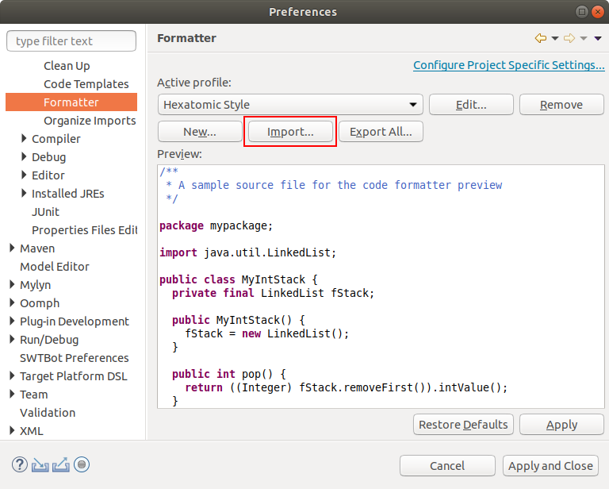
- Open the settings page Java > Code Style > Organize Imports
- Select all packages in the list and remove them.
This configures Eclipse to order all imported packages in alphabetical order.
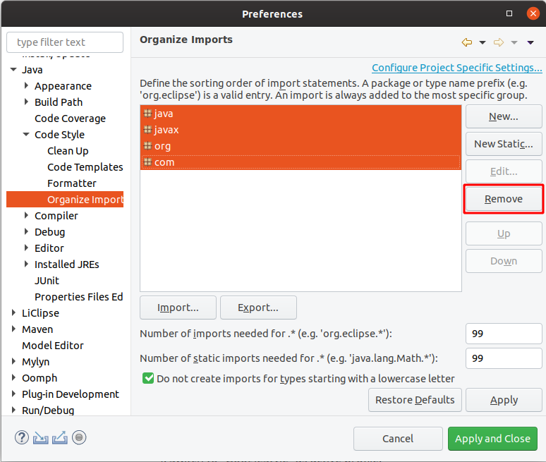
You can use the keyboard shortcut Shift + Ctrl + F to format a single source code file. Shift + Ctrl + O will organize the imports.
Checking for issues in Eclipse
To check for issues with the coding style in Eclipse, select the source code package in the Project Explorer, click right with the mouse and select Checkstyle > Check Code with Checkstyle.
This will add warnings to the Problems view of Eclipse and add yellow annotations to the source code files.
To remove these annotations again, select the source code package, click right with the mouse and select Checkstyle > Clear Checkstyle violations.
Creating and activating the target platform
The set of bundles that are available in Eclipse to run Hexatomic is defined by the bundles in your workspace (i.e., the Hexatomic bundles), and additionally the bundles in the active target platform. When you first start Eclipse, this target platform only includes the bundles that are installed in your Eclipse IDE installation. Hexatomic needs another set of bundles to run. As these bundles are not available when you first start Eclipse, it will show numerous errors for Hexatomic projects. This is because Eclipse cannot find the bundles that Hexatomic needs in the currently active target platform.
The bundles that Hexatomic needs are defined in a custom target platform definition project, which is located in the releng/org.corpus_tools.hexatomic.target/ directory.
You can see this project in the Project Explorer in Eclipse. It contains two important files:
org.corpus_tools.hexatomic.target.tpd: A reasonably well-readable plain text files which describes which bundles from which bundle repository should go in the target platformorg.corpus_tools.hexatomic.target.target: An XML file describing the target platform so that the Eclipse IDE can read it and activate it
The first time you run Eclipse - and every consecutive time that the target platform definition changes - you will need to activate the target platform.
To do so, use the plain text target platform description file ending on .tpd to create a new XML target platform definition:
- Right-click on
org.corpus_tools.hexatomic.target.tpd, and click on Create Target Definition File, or - Select
org.corpus_tools.hexatomic.target.tpdand press Alt + R.
This will refresh the XML definition file with the contents of the description file, or create the XML file if it doesn't exist.
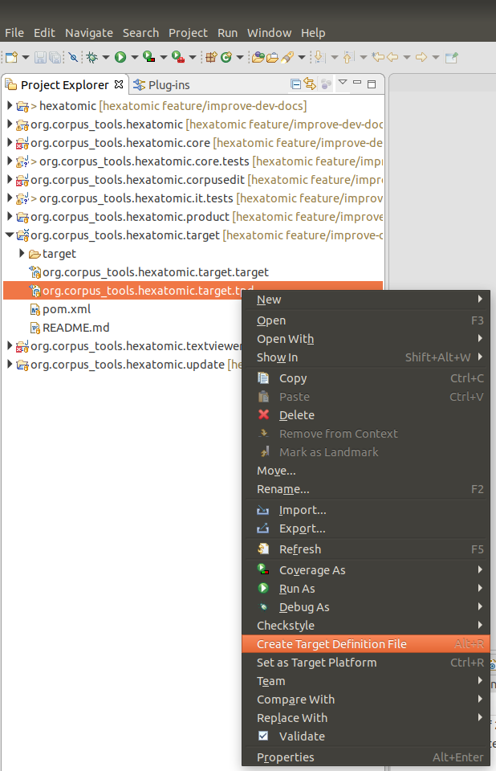
Next, open org.corpus_tools.hexatomic.target.target (you may have to right-click and choose Open With > Target Editor).
On opening the Target Editor, Eclipse will resolve the plugins in the target platform definition.
Wait until this has finished, then click the Set as Active Target Platform link on the top-right of the Target Editor.
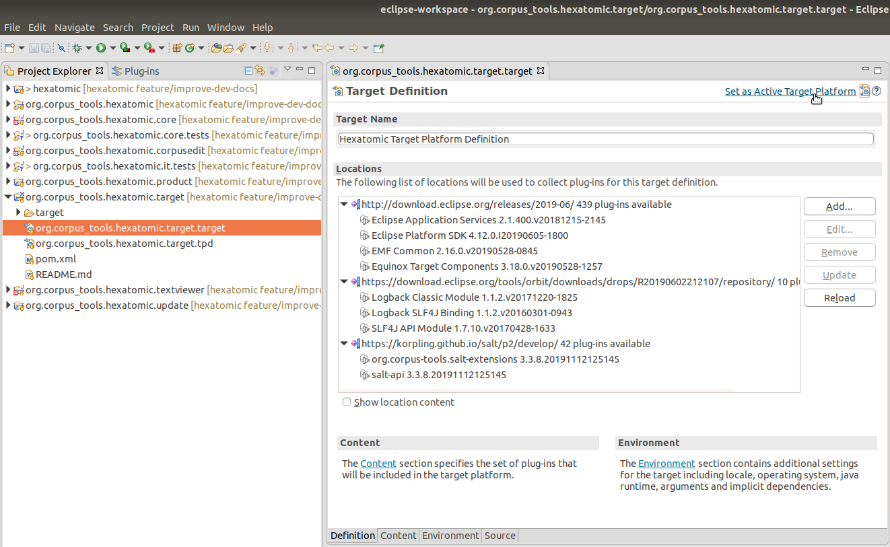
Any errors related to unresolvable imports should now be gone after Eclipse has automatically built the projects in the workspace.
To learn more about target platforms in Eclipse, read the Eclipse Target Platform Tutorial by Lars Vogel.
Running and debugging Hexatomic in Eclipse
Hexatomic is a modular project, and while it is possible to debug a user-defined subset of its bundles, it may be more useful to debug the complete application.
To run or debug Hexatomic from within the Eclipse IDE, with all the features and bundles, you have to launch the org.corpus_tools.hexatomic.product launch configuration, which is included in the project. Choose the debug icon in the toolbar and select Debug Configurations...
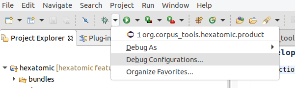
The launch configuration is shown in the Eclipse Application category and you can use it to run Hexatomic in debug mode by clicking on the Debug button.
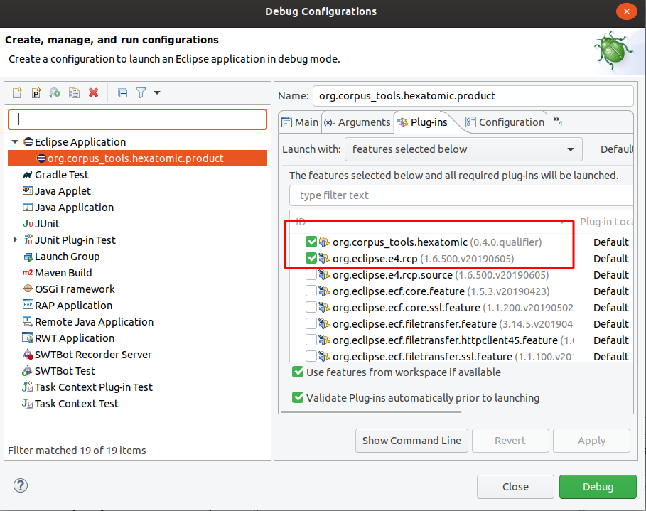
This launch configuration is based on features.
To add new features, select the Plug-ins tab, and activate the features you need.
Changing the product configuration will change the file releng/ide/org.corpus_tools.hexatomic.product.launch, which is part of the Git repository.
Development workflow
Summary
- We use Gitflow for developing Hexatomic, with the Maven plugin for Gitflow.
- To contribute new functionality, create a feature branch by running
mvn gitflow:feature-startin the repository root, and create a draft pull request againstdevelopon https://github.com/hexatomic/hexatomic.- To contribute a critical bug fix, or urgent fixes to documentation, or release engineering, create a hotfix branch by running
mvn gitflow:hotfix-startin the repository root, and create a draft pull request againstmainon https://github.com/hexatomic/hexatomic.- Describe your changes in the pull request title and complete the pull request form.
- When you think that your contribution is good to be merged into the main repository, change the pull request status to Ready for review.
- Collaborate with the maintainer to fulfill any missing requirements and to merge your changes into the main repository.
Work in a fork
Unless you are part of the core contributors team for Hexatomic, you cannot add changes in the main Hexatomic GitHub repository itself.
Instead, use a "fork" of this repository to do your work. A fork is a copy of the original repository which you own, i.e., which you can make any changes to. To learn how to create a fork, read the section Downloading the source code to your computer.
The Gitflow branching model
Hexatomic follows a common development workflow: Gitflow. It is a development workflow that works with a specific Git branch structure, and is actually quite simple to understand and follow, and based on just a few rules. Also, Hexatomic actually uses a Maven plugin for Gitflow, which makes it really easy to work with Gitflow.
If you are interested in learning more about Gitflow, read the original blog post describing it. The figure below gives an overview of the complete Gitflow workflow.
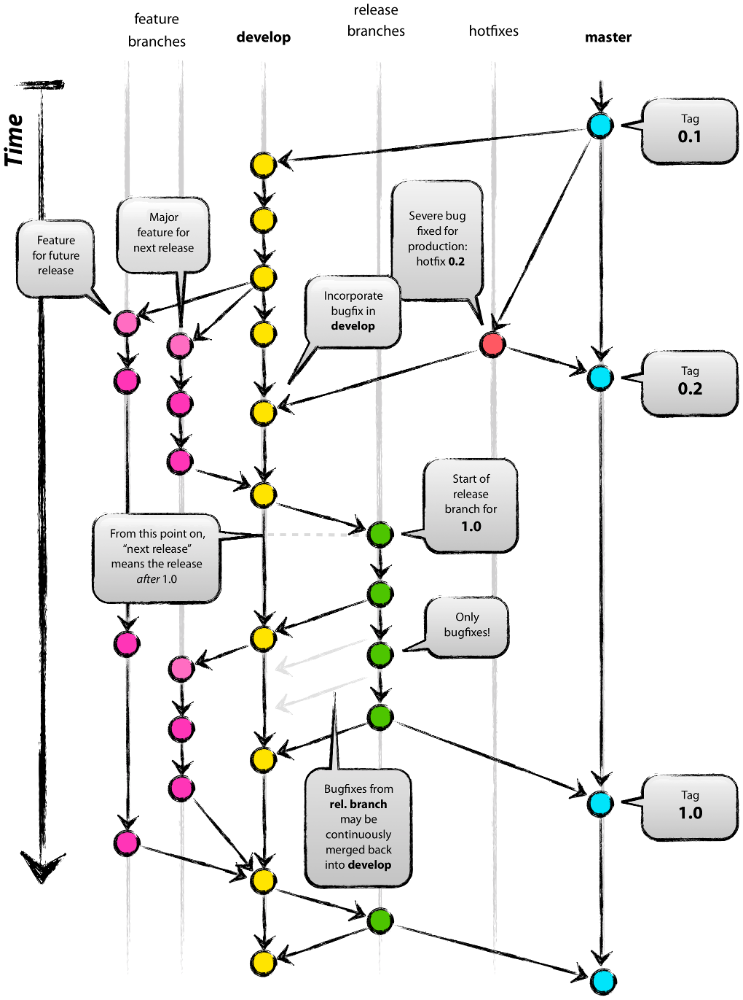
Figure: Git branching model overview. Graphic by Vincent Driessen from the original blog post "A successful Git branching model". Licensed under a CC BY-SA license.
Gitflow assumes that there is a single, central "repository of truth". In our case, this is the main repository at https://github.com/hexatomic/hexatomic.
Main branches
In the repository, there are two main branches that always exist and have an infinite lifetime:
maindevelop
The main branch always reflects the production-ready state.
In other words, main will always contain the releases of Hexatomic,
and any changes that are merged into main are releases.
The develop branch always contains the latest finished development changes.
That means, whenever a feature is ready to be released, it is merged into develop
to wait for the next release (which will then contain the new feature).
Branches you do your work in
In Gitflow, there are two types of branches where the actual work is happening:
featurebranches are used for developing new functionality, and to fix issues that change functionality.hotfixbranches are used to fix critical bugs in releases (which break functionality), and to fix urgent issues in documentation and release engineering for releases. Hotfixes don't change functionality, they repair functionality.
These distinctions are important, because depending on what type of contribution you want to make, it means that you have to start your work by running different commands.
Contribute new or changed functionality (feature)
To contribute new functionality to Hexatomic, or change functionality (including fixes for functional issues), documentation, or release engineering processes, create a feature branch which is based on the develop branch.
- Download the
developbranch from your fork repository:
# Download the contents of the remote `develop` branch (and others) to your local repository
git fetch
# Switch to the local branch `develop`
git checkout develop
- Install the project as-is to prepare your development work:
mvn clean install
- Create the new feature branch:
mvn gitflow:feature-start
- Give the feature branch a name as prompted by the Maven Gitflow plugin.
- Create a draft pull request against the
developbranch of https://github.com/hexatomic/hexatomic and start working. - Make, commit, and push your changes to this branch.
- Once you've finished your work, run
mvn clean installto make sure that the project builds correctly. - If any files were changed during
mvn clean install- e.g., license headers have been added automatically - make sure to commit and push these changes. - Make sure that you have documented your changes in the changelog (
CHANGELOG.md) in the[Unreleased]section, and that the updated changelog is pushed to your feature branch. - Once you are ready to have your changes merged into the project, request a review of your pull request from the maintainer (via the Reviewers settings for the pull request) and clicking
Ready to reviewin the pull request page on GitHub.
Contribute critical bug fixes, or urgent documentation, or release engineering fixes for a released version (hotfix)
To contribute a new critical bug fix, documentation, or release engineering fix to Hexatomic, create a hotfix branch which is based on the main branch.
- Create the new hotfix branch:
mvn gitflow:hotfix-start
- Give the hotfix branch a name as prompted by the Maven Gitflow plugin.
- Create a draft pull request against the
mainbranch of https://github.com/hexatomic/hexatomic and start working. - Make, commit, and push your changes to this branch.
- Once you've finished your work, run
mvn clean installto make sure that the project builds correctly. - If any files were changed during
mvn clean install- e.g., license headers have been added automatically - make sure to commit and push these changes. - Make sure that you have documented your changes in the changelog (
CHANGELOG.md) in the[Unreleased]section, and that the updated changelog is pushed to your hotfix branch. - Once you are ready to have your changes merged into the project, request a review of your pull request from the maintainer (via the Reviewers settings for the pull request) and clicking
Ready to reviewin the pull request page on GitHub.
If the maintainer themself is authoring the pull requests and there are no other maintainers available to review it, the maintainer can:
- Add the
unreviewedlabel to the PR. - Check that all automatic checks have been successful. If static code analysis is enabled, check that no new issues (like the "Code Smell" or "Bug" categories in SonarCloud) have been introduced and that all quality metrics (like minimal test coverage or maximum duplication of lines) are within the accepted range.
- Proceed with releasing the hotfix, see section Releases.
Unreviewed PRs are subject to periodic code triages.
Create a pull request for your contribution before you start working
Once you are ready to start working on your contribution, it's time to let the Hexatomic maintainer know about it, so that they can discuss the new changes and provide comments and support while you work. The way to do this is via a pull request on GitHub. Pull requests (PRs) aren't part of Git as such, but a feature of the GitHub platform.
This is how you start a draft pull request:
- Go to https://github.com and log in.
- In your fork of the Hexatomic main repository (
github.com/<your-user-name>/hexatomic), select the branch you have been working on via the Branches tab or the Branch dropdown menu. - Click the button New pull request. It's next to the Branch dropdown menu.
- Set the correct target of the pull request:
- For features, the base repository is
hexatomic/hexatomicand the base branch isdevelop, the compare branch is your feature branch. - For hotfixes, the base repository is
hexatomic/hexatomicand the base branch ismain, the compare branch is your hotfix branch.
- For features, the base repository is
- Click the Create pull request button.
- Give your pull request a meaningful title describing your changes.
- Complete the pull request form in the editor window.
- From the green dropdown menu below the editor, select Draft pull request.
- Make sure that Allow edits from maintainers is activated.
- Click the Draft pull request button to create your pull request.
Now, anytime you push a new commit to your feature branch, it will also show up in the pull request located in the Hexatomic main repository. This way, the Hexatomic maintainer can track progress, review changes as soon as they come in, and discuss changes with you.
What is a feature contribution, what is a hotfix?
Within the Hexatomic project, hotfixes are changes that are made to a deployed major or minor release. Hotfixes repair broken functionality, i.e., functionality that does not work at all. In contrast, changes to working functionality are made in features. Hotfixes can also include urgent non-functional changes to Hexatomic, such as correcting documentation which does not reflect actual functionality, urgent changes to the release workflow, etc.
Features are changes that introduce new functionality to the software, or changes to functionality, while the existing functionality keeps working. This also includes changes to functionality which are regarded as issue fixes. These fixes address issues with functionality that actually works, but is intended to work differently.
The following table gives some examples.
| Feature | Hotfix |
|---|---|
| Add a new editor | Fix a bug in an existing editor, which breaks functionality |
| Add new functionality to an editor | Fix behaviour in the release workflow which breaks the build |
| Add other functionality | Correct documentation which wrongly describes functionality |
| Change functionality | |
| Update documentation | |
| Update release engineering |
It is important to note that the develop branch always contains the truth, i.e., always holds the stage of development against which all features must be developed.
Implementation of new functionality must always start with a branch from develop via mvn gitflow:feature-start!
Do not base your work on any other feature/... or other branches.
Finished features are collected in develop before release.
Repositories
Currently, Hexatomic is developed within a single repository at https://github.com/hexatomic/hexatomic.
Push access to this repository is granted to the Hexatomic core contributors. Other contributors must work in their own fork.
Section Downloading the source code to your computer describes how to create a fork. If you have not worked in your own fork for a longer period of time, then you can use the GitHub's "Fetch Upstream" function (directly below the greed Code button in the fork overview) to synchronize your fork with the current main repository.
Project setup
Repository structure of hexatomic/hexatomic:
- Root directory
- main POM (
pom.xml) - Meta files (
.gitignore,README.md,LICENSE,CONTRIBUTING.md,CODE_OF_CONDUCT.md, etc.)
- main POM (
bundles- bundle sub-projects
features- feature sub-projects
docs- source files for user and developer/maintainer documentation
releng- configuration and release engineering files
.github- GitHub specific configuration, such as issue templates and workflows of the GitHub Actions CI
Setup details
The Hexatomic project in the hexatomic/hexatomic repository is set up generally
along the lines of Eclipse Tycho for building plug-ins, OSGi bundles and Eclipse applications - Tutorial by
Lars Vogel and Simon Scholz, Version 13.03.2019, and Eclipse RCP (Rich Client Platform) - Tutorial by Lars Vogel, Version 10.12.2018.
This means that
- It is built using Eclipse Tycho, a plugin for the Maven build system.
- Bundles (a.k.a. "plug-ins"), i.e., units that encapsulate well-defined functionality, are located in the
bundlesdirectory. - Features, i.e., units that integrate one or more bundles, are located in the
featuresdirectory. - Configuration and release engineering-related files are located in the
relengdirectory. This includes:- Project configuration (for packaging, target platform configuration, etc.)
- Product definition; in the Eclipse world, products are units that in turn integrate one or more features to define a deliverable software.
- Target platform definition; the target platform defines the features and bundles that Hexatomic is built on top of (against).
- Update site definition; Hexatomic's features and bundles are provided
- through a repository in the p2 repository format, from which Hexatomic can be updated automatically and manually from within the application in the future; and
- As deployable units, i.e., the actual zip files that users will download in order to get Hexatomic.
- Miscellanea, e.g., shell scripts for deploying artifacts, templates for third-party licensing and citation, etc.
- It uses pomless builds, i.e., not every single bundle or feature needs its own build definition XML file (
pom.xml), which saves a lot of manual labour.
Project parent / root POM
Hexatomic has a root POM to build the entire project with a single Maven command, e.g., mvn clean install, issued in the root folder.
Target platform
The target platform for Hexatomic is defined using the plug-in for Eclipse.
This allows to define the platform in a human-readable format, in the file org.corpus_tools.hexatomic.target.tpd.
The actual target platform definition file that both the Eclipse IDE and the Tycho Maven Plugin (which is used to build Hexatomic) use is generated
from this file.
More details about target platforms can be found in the section Creating and activating the target platform.
Documentation
Both the user documentation and the documentation for developers and maintainers are kept in the /docs/ folder, in a subfolder for each documentation type.
Documentation is written in Markdown from which websites are generated for the end user with mdbook (see section Development setup).
The actual sources for the documentation can be found in the respective /src/ subfolders.
README files
All folders that are parent folders in the repository contain a README.md file that explains the contents of the folder.
Architecture
Considerations regarding the architecture of Hexatomic are driven by the requirement that Hexatomic is extensible, and can be used for different kinds of corpus linguistic research.
The most essential architectural feature of Hexatomic is therefore a high degree of modularization. This means that whatever feature should be added to Hexatomic, it should be added as a new module, while at the same time the existing code base needs as few changes as possible.
For different stakeholders in Hexatomic, the architecture should cater for their respective needs:
- Linguistic researchers expect a seamless experience in using the software, and should be able to achieve their research goals without having to use other tools during their research workflow.
- Maintainers expect a clean overview of the architecture, and to be able to locate different parts easily.
- Developers expect to be able to add new features with minimum effort, in cleanly encapsulated modules, against well-defined and documented interfaces.
Modularization
Hexatomic is implemented as a desktop application based on an application framework, the Eclipse Rich Client Platform (RCP). This framework has its own terminology with regard to its architectural components. The following sections introduce some of the relevant terms and relate them to Hexatomic.
The building blocks of Hexatomic
Product
Hexatomic is a product: a standalone software program built with the Eclipse RCP.
It is defined and configured in the releng/org.corpus_tools.hexatomic.product/org.corpus_tools.hexatomic.product file.
The contents of a product are its features.
Features
Features are sets of plugins. They can also contain other features. Features represent larger, but logically separate units, for example tooling for a specific annotation task. This may include a specific editor UI, its annotation logic, and other related functionality.
Hexatomic contains several features. Most of them come from the Eclipse RCP platform, but one of them also contains a Java Runtime Environment (JRE) that is shipped together with Hexatomic, so that users don't have to download and install a JRE to be able to run Hexatomic (JustJ OpenJDK Feature in the figure below).
Finally, the Hexatomic product also contains the Hexatomic core feature, which contains all the parts that make Hexatomic software for linguistic research. The core feature is described further below.
The following figure shows a product-level view of Hexatomic's architecture.
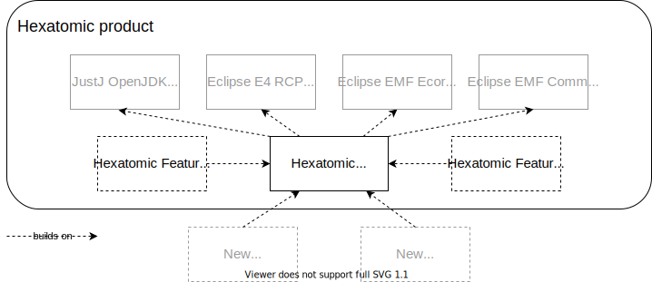
Features as main unit of modularization
Features are also the main "unit of modularization". This means that Hexatomic is extended through the inclusion of additional features. This inclusion can happen in two ways:
- Additional features are added to the Hexatomic product via its product definition file, see the section on Hexatomic as a product. This way, the additional features are shipped as part of the Hexatomic standalone software (e.g., Hexatomic Feature A and Hexatomic Feature B in the figure above).
- Additional features are added to Hexatomic at runtime, i.e., when it is being run. This way, users can extend Hexatomic "on-the-fly" while they use it, by downloading and installing additional features (e.g., New Feature A and New Feature B in the figure above). To enable the installation of new features at runtime, they must be available in a p2 repository. A p2 repository is an accessible folder structure that contains features and their plugins, but also metadata files that can be read by Eclipse RCP products through their update and installation mechanism.
Plugins
Finally, plugins are the smallest deployable and installable software component in the Eclipse RCP world. They encapsulate cleanly separated functionality. For example, there is a Hexatomic plugin which only deals with different linguistic formats, i.e., their conversion into and from Hexatomic's data model.
On a technical level, Hexatomic plugins (and Eclipse RCP plugins in general) are also OSGi bundles. OSGi is a modularization framework for Java, and Eclipse Equinox - which is contained in the Eclipse RCP platform - is the OSGi reference implementation.
The Hexatomic core feature
The Hexatomic core feature contains the fundamental parts of the software application:
- The configuration of the Eclipse RCP application platform (
bundles/org.corpus_tools.hexatomic.core/Application.e4xmi), and basic application functionality such as logging - The Salt data model API (see
features/org.corpus_tools.hexatomic/feature.xml) - The Pepper conversion framework configuration logic, GUI and format-specific plugins (see
bundles/org.corpus_tools.hexatomic.formats) - The corpus project management API and GUI (
bundles/org.corpus_tools.hexatomic.corpusedit) - Two powerful basic editors for the manipulation of the data model via annotation tasks: the Graph Editor(
bundles/org.corpus_tools.hexatomic.graph) and the Grid Editor (bundles/org.corpus_tools.hexatomic.grid) - A simple viewer for document texts (
bundles/org.corpus_tools.hexatomic.textviewer)
Other features can build on the core feature and its plugins to extend Hexatomic's functionality.
Extending Hexatomic
The core feature has a defined scope, and should not be extended by adding further plugins. Generally, its scope is to enable basic manipulation of Salt models: provision of the application, creation or import of corpora, basic manipulation of these corpora (covered by the Graph Editor and the Grid Editor), and export to corpus formats. For all new functionality that goes beyond this, you should create a new feature, and add new plugins to it that implement the functionality.
Data model
Hexatomic works on instances of a graph-based meta model for linguistic data called Salt.
In Salt, linguistic data is organized in projects:
- A Salt project contains at least one - and often only one - corpus graph.
- A corpus graph contains corpora as nodes.
- The child nodes of a corpus can again be corpora (so-called sub-corpora) and documents.
- Each document has a document graph, which is the model element containing the actual linguistic data:
- primary data sources (text, audio, or video material), and
- annotations.
Salt is very powerful in that it is theory-neutral and tagset-independent, and can model a vast variety of linguistic data and annotations.
To find out more about the Salt meta model for linguistic data and its Java API, please refer to the Salt homepage, and the Salt documentation.
Accessing the data model
During runtime, Hexatomic operates on a single Salt project at any one time.
The currently opened Salt project is part of the global state of the application, and can be accessed by injecting an instance of the ProjectManager singleton into your code.
For an overview of how dependency injection works in Eclipse-based applications such as Hexatomic, see Lars Vogel's tutorial "Dependency injection and Eclipse".
import javax.inject.Inject;
import org.corpus_tools.hexatomic.core.ProjectManager;
import org.corpus_tools.salt.common.SaltProject;
public class MyClass {
@Inject
private ProjectManager projectManager;
public void execute() {
SaltProject theProject = projectManager.getProject();
}
}
Reacting to changes
You can register for any changes on the Salt project (e.g., added annotations to a document), by subscribing to the Topics.ANNOTATION_CHANGED topic, which will be sent by the Eclipse RCP IEventBroker service.
After registering your listener, you will receive all updates for all documents and all changes to the project structure.
You have to decide in your own code if you need to handle an update, e.g., because it is related to a document you are editing for which the event should trigger redrawing the editor you are implementing.
The argument for the Topics.ANNOTATION_CHANGED event is of the type org.corpus_tools.hexatomic.core.undo.ChangeSet and contains a list of all changes.
It also has a helper function to test if a given document is affected by its changes.
@Inject
@org.eclipse.e4.core.di.annotations.Optional
private void onDataChanged(@UIEventTopic(Topics.ANNOTATION_CHANGED) Object element) {
if (element instanceof ChangeSet) {
ChangeSet changeSet = (ChangeSet) element;
if (changeSet.containsDocument(
part.getPersistedState().get(OpenSaltDocumentHandler.DOCUMENT_ID))) {
// TODO: check graph update is relevant for this editor and update UI
}
}
}
Logging and error handling
Logging
Hexatomic uses the SLF4J logging API to log messages. To enable a logger for a specific class, create a static final variable which holds the class-specific logging object.
private static final org.slf4j.Logger log =
org.slf4j.LoggerFactory.getLogger(MyClass.class);
You can use this log object everwhere in the code to output debug, info, warning or error messages to the console or to the log files.
int counter = 101;
log.debug("Selecting created document {}.", 101);
See the SLF4J manual for more information on the API.
To implement the API, we use the Logback library in the org.corpus_tools.hexatomic.core bundle.
For testing and debugging purposes, there is a logback-test.xml file in the root of the logging bundle.
This configuration file is loaded whenever Hexatomic is started from Eclipse using the Debug/Run configuration and will output messages on the debug level.
When compiling the Hexatomic product, the file logback.xml is copied to the product root directory and loaded from there.
This allows a user/developer to customize the logging on their own, even when using a published binary artifact instead of debugging directly from the Eclipse IDE.
Per default, only messages from the info level and above are printed to the command line.
See the Logback documentation how to write or adapt this file.
Handling exceptions
The core bundle exports the special org.corpus_tools.hexatomic.core.errors.ErrorService service which should be used to display error messages to the user.
To use the ErrorService in a class, you can either simply pass an instance of it to a constructor of the class, or you can inject the service via the Eclipse context. To learn more about the Eclipse context and dependency injection, read Lars Vogel's tutorial "Dependency injection and Eclipse".
To report an exception, simply call the handleException(...) function of the service with an error message, the exception object, and the class of the caller, i.e., the class in which you catch the exception.
project = SaltFactory.createSaltProject();
try {
project.loadCorpusStructure(path);
} catch (SaltException ex) {
// In this example the calling function is part of the ProjectManager class.
errorService.handleException("Cannot load project from " + path.toString(), ex,
ProjectManager.class);
}
This will produce the exception dialog shown below. It includes the error message, and a stack trace which the user can inspect by expanding "Details" (which is initially hidden).

In addition to the dialog, a log entry is added.
This log entry uses the logger for the caller class which has been passed to the handleException(...) method.
18:52:54.324 [main] ERROR o.c.h.c.ProjectManager - Exception occured: Could not load salt project from file:/tmp
org.corpus_tools.salt.exceptions.SaltResourceException: Can not load SaltProject, because path '/tmp/saltProject.salt' does not exist.
at org.corpus_tools.salt.util.SaltUtil.loadSaltProject(SaltUtil.java:835) ~[org.corpus-tools.salt-api_3.3.8.20190808115214.jar:na]
at org.corpus_tools.salt.common.impl.SaltProjectImpl.loadCorpusStructure(SaltProjectImpl.java:148) ~[org.corpus-tools.salt-api_3.3.8.20190808115214.jar:na]
at org.corpus_tools.hexatomic.core.ProjectManager.open(ProjectManager.java:108) ~[org.corpus_tools.hexatomic.core/:na]
at org.corpus_tools.hexatomic.core.handlers.OpenSaltProjectHandler.execute(OpenSaltProjectHandler.java:26) [org.corpus_tools.hexatomic.core/:na]
at sun.reflect.NativeMethodAccessorImpl.invoke0(Native Method) ~[na:1.8.0_232-ea]
Showing error messages
If an error does not originate from an exception, you can use the showError(...) function of the error service to display a dialog.
This function takes an optional dialog title, the error message, and the class of the caller as arguments, as shown in the following example.
if (hasChildren) {
errorService.showError("Error when deleting (sub-) corpus",
"Before deleting a (sub-) corpus, first delete all its child elements.", this.getClass());
return;
}
This produces both an error dialog and a logging output (without stack trace).

19:03:26.013 [main] ERROR o.c.h.c.CorpusStructureView$8 - Error when deleting (sub-) corpus: Before deleting a (sub-) corpus, first delete all its child elements.
Adding a new editor
Following the principle of "separation of concerns", editors should generally be developed in separate, dedicated bundles in the bundles directory of the project.
Exceptions to this rule should be based on compelling reasons for including an editor in an existing bundle project.
Reasons may include, for example, that the architectural overhead for creating a very simple editor may be too high.
In cases of uncertainty, follow the rule that changes to software should keep the maintenance effort in proportion to the benefit of the change, and generally as small as possible.
In Eclipse 4, additions to the user interface are organized in so-called Parts. A part consists of two components:
- a
PartDescriptorentry in thefragment.e4xmifile of the bundle containing the new editor, and - the actual Java class implementing the behavior.
Adding a minimal Java class
Add a Java class to your bundle project.
This class does not need to inherit any interface, but should have a method with the @PostConstruct annotation.
import javax.annotation.PostConstruct;
/* ... */
public class TextViewer {
@PostConstruct
public void postConstruct(Composite parent, MPart part, ProjectManager projectManager) {
// TODO: add actual editor implementation
}
}
This example injects the SWT parent composite which can be used to construct user interface elements and the part parameter, which describes the application model for this part.
SWT ("Standard Widget Toolkit") is the default user interface widgets toolkit for Eclipse-based applications, such as Hexatomic, and is used in this example. For more information, see the Eclipse SWT project website. For information on the application model of Eclipse-based applications, see the Eclipse Wiki page on the UI model.
The projectManager is an Hexatomic specific service that provides access to the global Salt project which is currently loaded.
Note that you can directly add the SWT instructions to define your user interface in the code, or use the Eclipse Window Builder, which is a graphical editor for user interfaces based on SWT (and other technologies).
Adding a part to the application model
To add the newly created class to the Eclipse RCP 4 application model, open the fragment.e4xmi file of the existing bundle, or create a new one via the File > New > Other menu and choose New Model Fragment.

In the fragment editor, add a new model fragment by selecting "Model fragments" and clicking on the "Add" button.
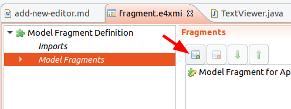
Edit the model fragment properties by selecting the newly created entry.
Make sure to set the extended element ID to xpath:/and the feature name to descriptors (1).
This means that the model fragment extends the part descriptors of the application.
Then, add a new part descriptor with the Add button (2).

Select the new part descriptor in the model fragment editor and you can edit several properties, such as the caption of the part, or an icon.
Make sure to set the Class URI field to the newly created editor class.
You can use the Find button to navigate the workspace and insert the proper value.
Also, the Category must be set to org.corpus_tools.hexatomic.tag.editor to mark that this part is an Hexatomic editor.
The Label field will be used as a name for the editor, for example in a menu from which the user will choose one of the editors available to open a document with.
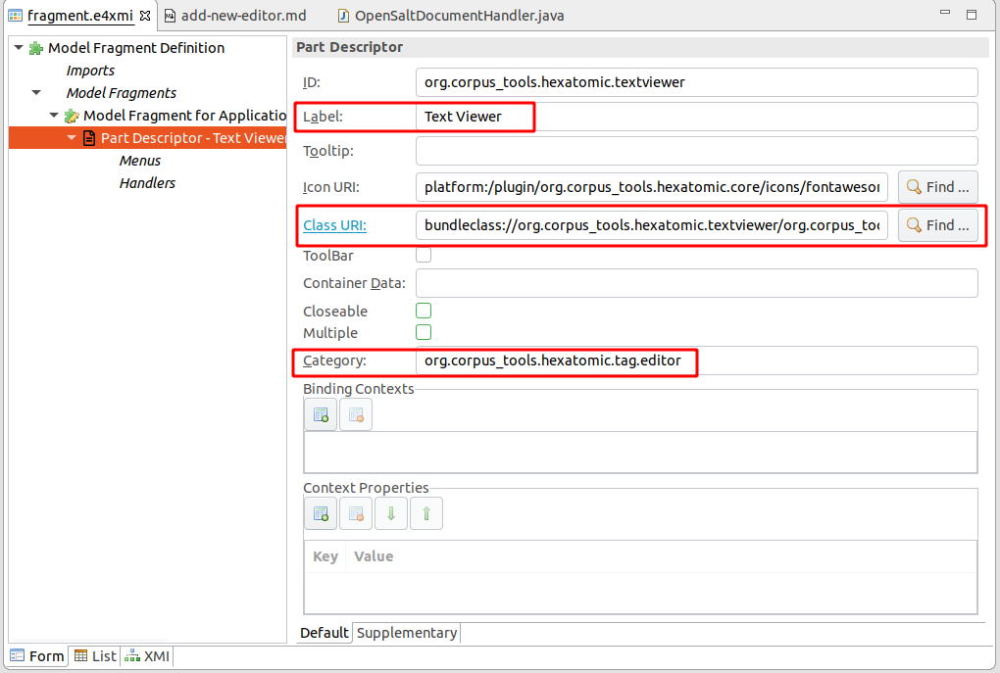
Getting the associated Salt document to display
When an editor part is created, it is initialized with a state.
This state can hold internal configurations, but also contains the ID of the associated Salt document that this editor should edit.
The actual ID is set to the editor part's state in the class handling user actions to open a Salt document, org.corpus_tools.hexatomic.core.handlers.OpenSaltDocumentHandler.
It is stored in the part state in a setting with the name org.corpus_tools.hexatomic.document-id.
The injected ProjectManager can then be used to get the actual document.
String documentID = part.getPersistedState()
.get("org.corpus_tools.hexatomic.document-id");
Optional<SDocument> doc = projectManager.getDocument(documentID);
See the Data model section on how to listen to changes on the document.
Changing the document
You can manipulate the document graph returned by the ProjectManager directly using the Salt API.
Every change via the Salt API will automatically be recorded to enable undoing and redoing the changes.
A user interaction that manipulates the document graph can consist of multiple Salt API calls, each one of which may potentially lead to inconsistent states. You must therefore mark the end of a user interaction by calling the addCheckpoint() function of an injected ProjectManager instance.
Undo and redo will use these checkpoints to restore to a consistent state.
In addition, calling addCheckpoint() will notify all other registered editors that a consistent set of changes has been added.
// Get the document graph for the document
SDocumentGraph graph = doc.getDocumentGraph();
// First change: create and add a primary text
STextualDS anotherText = graph.createTextualDS("Another text");
// Second change: create and add a token
graph.createToken(anotherText, 0, 7);
// Third change: create and add another token
graph.createToken(anotherText, 8, 12);
// Add a checkpoint for the three previous changes
projectManager.addCheckpoint();
Cleaning up resources when closed
When the user closes an editor, it should clean up local and global resources.
E.g., a Salt document might not need to hold the reference to the actual annotation graph when it is not edited anymore.
You can annotate a method of your editor with the @PreDestroy annotation to execute its code whenever the part is closed.
Since several editors can open the same document at the same time, releasing it should not be performed directly, but by signaling an event over the IEventBroker of Eclipse RCP.
When posting an event, you have to use the topic DOCUMENT_CLOSED and give the document ID as an argument.
import javax.annotation.PreDestroy;
import org.corpus_tools.hexatomic.core.Topics;
/* ... */
@PreDestroy
public void cleanup(MPart part) {
events.post(Topics.DOCUMENT_CLOSED,
part.getPersistedState().get("org.corpus_tools.hexatomic.document-id"));
}
Automated tests
We use the JUnit5 testing framework to automate tests.
As per convention in Eclipse RCP applications, tests are located in separate test bundles and not part of the original
bundle which is tested.
In Hexatomic, all test bundles should be located in the tests/ folder.
Unit tests test the behavior of a specific class of a bundle.
They should be part of a test bundle with the same name as the original one, but with the string .tests appended.
E.g. tests for classes of the org.corpus_tools.hexatomic.core bundle should be part of the
org.corpus_tools.hexatomic.core.tests bundle.
If you add a new bundle, always also create a corresponding test bundle.
The special bundle org.corpus_tools.hexatomic.it.tests is used for integration tests on the whole application.
There can be failures executing the integration tests if the keyboard layout of the system is unsupported or wrongly detected.
See the UI integration tests section for hints on how to fix these failures.
Execute tests with Maven
We are using the Tycho Surefire Plugin
to execute the tests.
Tests are executed when building the project with mvn install.
To specifically run the tests and not install the artifacts, use mvn integration-test instead.
Unlike unit tests, mvn test will not work for integration tests, as the Tycho Surefire Plugin requires
the bundles to be packaged, which happens in Maven's package phase, which
comes after test and before integration-test. See the section Running UI
integration tests below for more information on running these tests.
You can also generate a test code coverage report by executing mvn verify site -Pcoverage.
The generated report will be located under tests/org.corpus_tools.hexatomic.tests.report/target/site/jacoco-aggregate/index.html.
To learn more about the Maven build lifecycle, read the Maven Lifecycles Reference.
Execute tests in Eclipse
Open the corresponding test bundle project for the bundle you want to test. Select the project in the "Project Explorer", right-click on it and choose Run As > JUnit Plug-in Test.
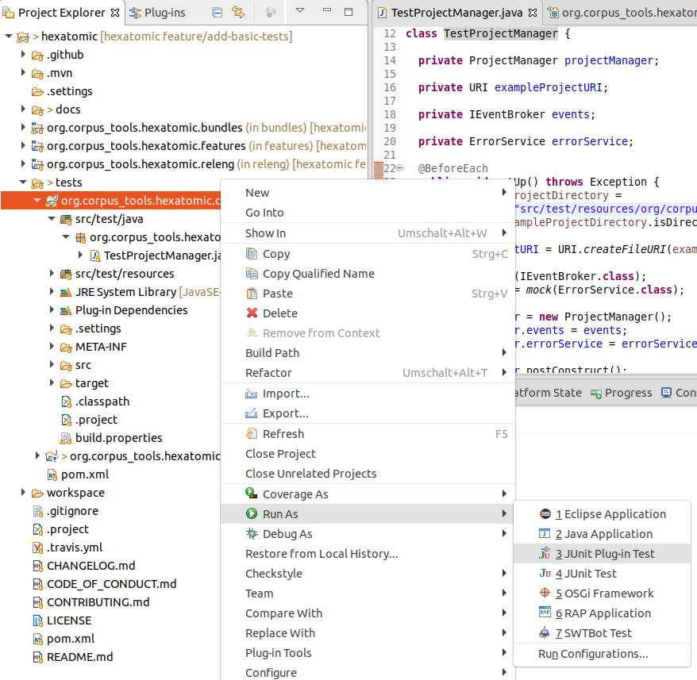
This will open a new panel with the results of the tests once finished. You can select to re-execute a single test by clicking on it and choosing Run or Debug.
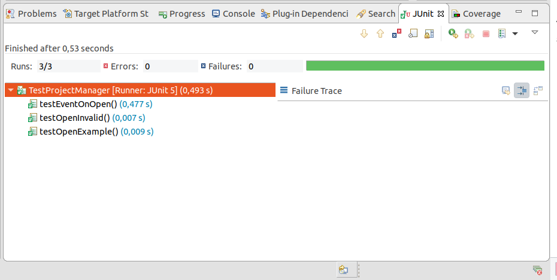
To run the user interface integration test in the org.corpus_tools.hexatomic.it.tests bundle, select the project and
choose Run > Run Configurations... in the main menu.
A "UI Integration Test" configuration should be available under the category "JUnit Plug-in Test".
Click on Run to execute the user interface integration tests.

This will open an actual Hexatomic window where the user interactions are executed automatically. See the section Running UI integration tests below for more information on running these tests.
Adding a test bundle
To create a new test bundle, select File > New > Other in the Eclipse menu. In the list of wizards, select Plug-in Development > Fragment Project and click Next. Fragment bundles are similar to normal ones, but they extend an existing bundle (the one that is tested) and have access to all the internal classes and functions of the existing host bundle.
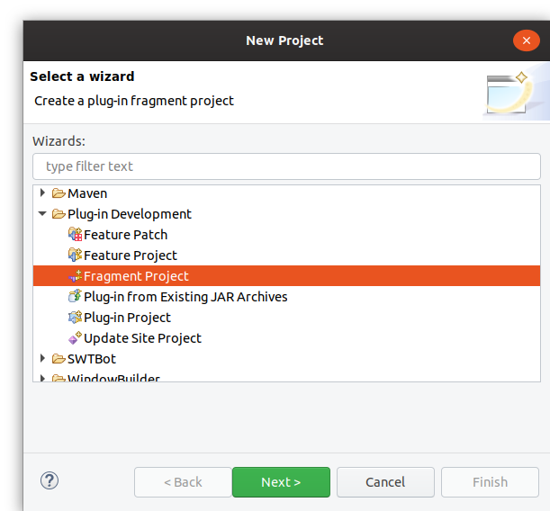
The wizard will now ask for some basic properties of the new project.
Use the bundle name with .tests appended as project name and make sure not to use the default location, but a folder
with the project name under the tests folder in your Hexatomic source code folder.
Also, set the "Source folder" to src/main/java and the "Output folder" to target/classes.
When you configured the basic project properties, click on Next.
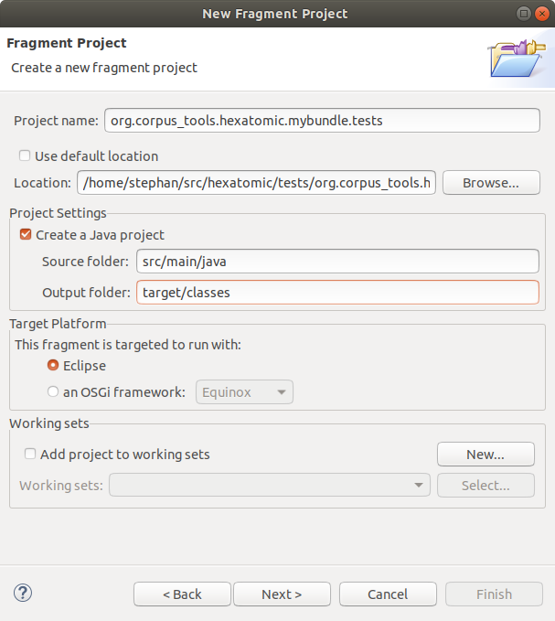
Since this is a fragment project, select the "Plug-in ID" of the "Host Plug-in" that is tested in the next step of the wizard. You should make sure the "ID" and "Version" of the test are set to the correct values. The version should always be the same as the tested bundle. Click Finish to create the new project.
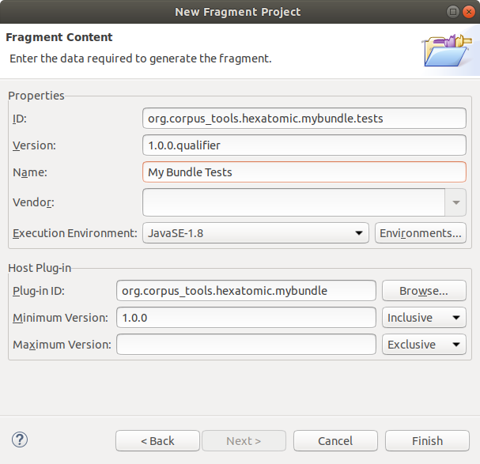
Adding a test case
If you have an existing test bundle project, you can add a new JUnit Test Case by clicking right on the src/main/java folder
in the project explorer and selecting New > Other in the context menu.
In the wizard, select Java > JUnit > JUnit Test Case and click on Next.
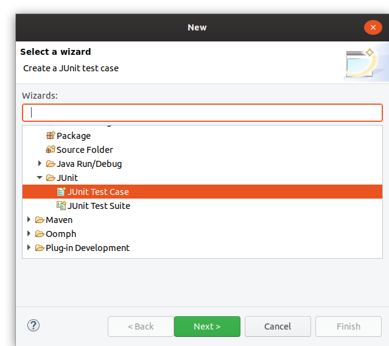
In the properties of the test case, make sure to select "New JUnit Jupiter test" to create a JUnit5 test.
Also, select the class you want to test in the "Class under test" field.
The "Name" of the test should start with Test so that the test executor of the build system (the Tycho Surefire Plugin) can identify it as a test.
Click Finish to create the empty class or Next if you want to add tests for specific functions of the tested class.
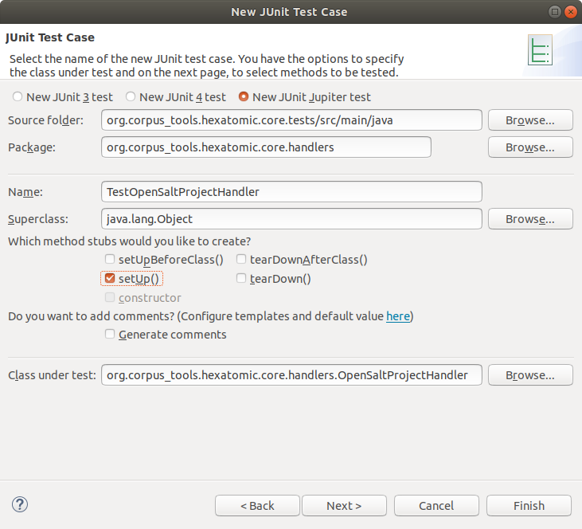
See the JUnit5 User Guide for a general description of how to write tests.
Mocking injected dependencies
In Eclipse RCP 4 applications such as Hexatomic, dependency injection is used extensively.
To restrict the scope of unit tests to the actual code that is being tested, rather than extending it to include any classes or interfaces from injected dependencies that the code under test may use, you can mock these classes or interfaces.
To mock dependencies, we use the Mockito framework.
In the following example, the IEventBroker is not implemented but mocked with Mockito's mock() method.
The mock can then be used by the class under test in the same way the real implementation would be used; in this case, the class ProjectManager has a field events of the
type IEventBroker, which is mocked for the test.
Therefore, the behavior of the actual IEventBroker implementation isn't tested, only the ProjectManager code is.
package org.corpus_tools.hexatomic.core;
import static org.mockito.ArgumentMatchers.anyString;
import static org.mockito.ArgumentMatchers.eq;
import static org.mockito.Mockito.mock;
import static org.mockito.Mockito.verify;
import org.eclipse.e4.core.services.events.IEventBroker;
import org.eclipse.emf.common.util.URI;
import org.junit.jupiter.api.BeforeEach;
import org.junit.jupiter.api.Test;
class TestProjectManager {
// this test case tests the ProjectManager
private ProjectManager projectManager;
private IEventBroker events;
@BeforeEach
public void setUp() throws Exception {
// create a mocked version of the interface
events = mock(IEventBroker.class);
projectManager = new ProjectManager();
// use the mocked object in the tested class
projectManager.events = events;
projectManager.postConstruct();
}
@Test
public void testEventOnOpen() {
projectManager.open(URI.createFileURI("/tmp/exampleSaltProject"));
// check that a certain method of the mocked object was called with the specified arguments
verify(events).send(eq(ProjectManager.TOPIC_CORPUS_STRUCTURE_CHANGED), anyString());
}
}
Using interface integration tests
Adding new integration tests
To add user interface integration tests add new test cases to the special bundle org.corpus_tools.hexatomic.it.tests.
The tests are executed with SWTBot, a testing tool for user interfaces.
To learn how to use SWTBot, you can read the documentation on the SWTBot homepage, or Lars Vogel's SWTBot tutorial.
SWTBot needs an instance of the class org.eclipse.swtbot.e4.finder.widgets.SWTWorkbenchBot to execute user interactions
automatically from the test case.
Make sure you use the version from the org.eclipse.swtbot.e4.finder.widgets package, which is the only one working
with Eclipse RCP 4.
Creating an instance of a SWTWorkbenchBot needs an Eclipse context, which can be acquired with the helper class
org.corpus_tools.hexatomic.it.tests.ContextHelper.
SWTWorkbenchBot bot = new SWTWorkbenchBot(ContextHelper.getEclipseContext());
Otherwise, these tests are normal JUnit5 test cases and have the same annotations and structure. Below is a complete example, which tests if renaming a document in the corpus structure editor works.
package org.corpus_tools.hexatomic.it.tests;
import static org.junit.jupiter.api.Assertions.assertNotNull;
import org.eclipse.swtbot.e4.finder.widgets.SWTWorkbenchBot;
import org.eclipse.swtbot.swt.finder.keyboard.Keystrokes;
import org.junit.jupiter.api.Test;
class TestCorpusStructure {
private SWTWorkbenchBot bot = new SWTWorkbenchBot(ContextHelper.getEclipseContext());
@Test
void testRenameDocument() {
// Make sure to activate the part to test before selecting SWT components
bot.partById("org.corpus_tools.hexatomic.corpusedit.part.corpusstructure").show();
// Add corpus graph 1 by clicking on the first toolbar button ("Add") in the corpus structure editor part
bot.toolbarDropDownButton(0).click();
// Add corpus 1
bot.toolbarDropDownButton(0).click();
// Add document_1
bot.toolbarDropDownButton(0).click();
// Select and edit the first document
bot.tree().getTreeItem("corpus_graph_1").getNode("corpus_1").getNode("document_1").select();
bot.tree().getTreeItem("corpus_graph_1").getNode("corpus_1").getNode("document_1").doubleClick();
bot.text("document_1").setText("abc").pressShortcut(Keystrokes.LF);
// Make sure that the document has been renamed
bot.tree().expandNode("corpus_graph_1").expandNode("corpus_1").expandNode("abc");
assertNotNull(bot.tree().getTreeItem("corpus_graph_1").getNode("corpus_1").getNode("abc"));
}
}
To test whether an action was successful, integration tests do not access the internal data model of the application. Instead, they check the effects on the user interface (for example, the result of a renaming action is a new tree item with the new name). To test internal states, use unit tests for the controllers of the bundle instead.
When your test case has more than one test, all tests are executed in the same environment.
Thus, previously executed tests will influence subsequent ones.
You can set the execution order within a test class explicitly with the @Order(int) annotation: https://junit.org/junit5/docs/current/user-guide/#writing-tests-test-execution-order.
If you integrate a new bundle that has not been tested before, you have to add the bundle manually to the
dependencies of org.corpus_tools.hexatomic.it.tests.
Adding it to the feature or product is not enough.
Issues with keyboard layout and integration tests
Note that the SWTBot-based integration tests try to detect the keyboard layout automatically using the system locale.
For example, if the computer running the tests has the locale de_DE.UTF, SWTBot would detect the keyboard layout DE_DE.
This can lead to test errors when the locale is not consistent with the keyboard layout (e.g. some programmers prefer English keyboard layouts, which would be EN_US or MAC_EN_US, while still using their native locale).
To enforce a specific keyboard layout for the tests, set the SWTBOT_KEYBOARD_LAYOUT environment variable to the layout you want to use.
This can also be helpful if SWTBot does not provide a keyboard layout for the current locale, e.g., if there is no EN_GB layout you can still enforce the very similar EN_US layout.
For more information on SWTBot's keyboard layouts, see Keyboard Layouts in SWTBot on the Eclipse wiki.
Running UI integration tests
UI integration tests start Hexatomic and automatedly interact with the graphical user interface. You must not use the keyboard or mouse during these GUI tests, as this may interfere with the automated interactions.
If you want to keep working during the local build, you can run the build
"headlessly", i.e., with the help of a virtual display server.
To do this on Linux, for example, you can run the script releng/sh/metacity-run.sh from the root of the local repository:
./releng/sh/metacity-run.sh mvn clean install
See the SWTBot documentation on this topic for further details.
Documentation
Documentation is an integral part of the development of Hexatomic! Without documentation, users will not be able to use Hexatomic successfully and effectively. Also, other developers - and even your future self - will not be able to understand the code, or why things are done how they are done without documentation. We therefore require that you document the changes you make to Hexatomic. Without providing complete documentation for the changes you make, your changes will not be accepted into the codebase.
We generally have the following types of documentation in Hexatomic:
- Semantic code: Semantic code is code that explains itself. A method and its arguments, for example, should be named so that people who read the code can understand easily what the method does.
- Code comments: Comments within the code explain small parts of the code that may otherwise be hard to understand.
- API documentation: Hexatomic uses Javadoc strings to formally document the different parts of the Java code: types, methods, variables, etc. Javadoc strings are also part of the code.
- Developer and maintainer documentation: Text documentation that describes how development and maintenance work in the Hexatomic project. You can find the sources in the
./docs/dev/directory. - User documentation: Text documentation that describes how to use Hexatomic. You can find the sources in the
./docs/user/directory. - Repository documentation: The following files are in the root directory of the GitHub repository: The README file in the root of the GitHub repository is a landing page to get an overview of the Hexatomic software project; the contribution guidelines provide details on how to contribute to Hexatomic; the code of conduct provides ground rules for collaboration; the license file details under which license requirements Hexatomic can be used and changed; the changelog documents how Hexatomic has changed across released versions.
- Metadata: The CITATION.cff file provides information on how to cite Hexatomic. You can find it in the root directory of the repository.
- Templates: Issue and pull request templates provide information on what is necessary to create an issue or pull request. You can find them in the
./.github/directory.
It is actually quite easy to provide documentation if you follow some basic rules.
Ground rules for documentation
- Document as you make changes.
- Only document what needs to be documented.
- Document where it makes the most sense.
- Document for everyone who is affected by the changes you make.
- Keep it as simple as possible.
- Be consistent.
Here are some more detailed explanations of these rules.
Document as you make changes
Don't push documentation to the end of the task, you will forget important details and it will become a chore. Always document at the same time as you make your changes.
It is helpful to keep changes as small as possible, and not to mix different changes. This way you will always only have little documentation to write.
A general tip is to encapsulate small defined change sets in separate pull requests, and to make sure that all the necessary documentation is there before you ask for a review of the pull request.
Only document what needs to be documented
Don't overdo it! You don't need to write code comments for every single line of the code. You also probably don't need to explain how to use a mouse.
Try not to unnecessarily duplicate information from other sources, provide a link to them instead.
Document where it makes the most sense
Documentation should be put as closely as possible to the thing it describes. If an implementation detail within a method needs explanation, put it in a code comment or the Javadoc string for the method, not in the developer documentation.
Document for everyone who is affected by the changes you make
For example:
- If you change functionality, add a section in the user documentation.
- If you change configuration details for the continuous integration pipeline, document it in the developer documentation.
- If you accept a PR from a new contributor, make sure that the citation metadata is updated, and that they are added to the list of contributors in the README.
Keep it as simple as possible
Try to write your documentation so that the largest possible audience will understand it. This means, for example, that you should avoid jargon and abbreviations, even if they are very familiar to you. Also keep in mind that not everyone understands English equally well, therefore try to keep sentences short and simple.
Be consistent
Try to be consistent in how you document. Make yourself familiar with a documentation style, and follow it. A good example for a documentation style is the Google developer documentation style guide.
Some consistency in documentation style for Javadoc strings and code comments is also enforced by Checkstyle, which is run during builds.
Maintenance
This section contains the documentation for Hexatomic maintenance work.
The maintainer is the central position in the Hexatomic software project. They are responsible for completing the following tasks. All tasks should be completed in a timely fashion, and based on the Hexatomic code of conduct.
Maintenance work
- Ensure that Hexatomic always builds without errors in the
mainanddevelopbranches - Fix security issues and bugs
- Maintain templates, configuration files, community files (
README.md,CONTRIBUTING.md,CODE_OF_CONDUCT.md, etc.), licenses, etc.
Contributions
- Ensure that citation information is always up-to-date (in
CITATION.cff) - Ensure that the contributors list is always up-to-date (in
README.md, maintained via the All Contributors bot) - Maintain pull requests
Code review
- Perform code reviews
- Document & triage unreviewed code
Issues
- Communicate with issue authors: answer questions, and suggest fixes, or make fixes themself if possible or necessary
- Do issue housekeeping: check open issues regularly, and fix and/or close where possible
Releases
- Release Hexatomic
- Publish new releases
Documentation
- Maintain user documentation and ensure that it is up-to-date with each contribution
- Maintain developer and maintainer documentation and ensure that it is up-to-date with each contribution
- Document the current state of practice for developing and maintaining Hexatomic
Communication & community work
- Publicize releases to the relevant stakeholders
- Includes emails to the user mailing list
hexatomic-users@lists.hu-berlin.de
- Includes emails to the user mailing list
- Redirect questions to the issue tracker
- Update external resources
- Work with and build the community of users and developers
Prepare maintainer changes
- Prepare the repositories for takeover by a new maintainer
- Document takeover by a new maintainer
Taking over as new maintainer
This section describes what you will have to do to assume the maintainer role for the Hexatomic software project.
The Hexatomic research project aims to create a sustainable software project around Hexatomic. This means that new maintainers should be able to come to the project, even when it has been dormant or abandoned for some time. This section therefore assumes that there is currently no active maintainer for the project who will hand it over proactively in an ordered fashion.
If you want to take over as maintainer at this stage, you should go through the following steps.
Announce that you want to take over as new maintainer
The old maintainers may still be around, and may be able to help you gain access to the repository. Therefore it is a matter of due diligence to first announce your willingness to act as the new maintainer of the project.
The best way to do this is to create a new issue in the original repository.
Also make sure that you @mention the last known maintainer of the project.
This information should be available in the README.md file at the root of the repository.
They may be notified of the mention, and react by commenting on your issue.
This way you can discuss the best way for you to take over as new maintainer.
Alternatively, look for any other contact information for the project, such as an email address or a mailing list address, and announce your plan there.
If you get no reaction to your announcement, you can assume that the project has been abandoned, and proceed with the next step.
Get administrative rights to the source code repository, or fork it
The source code and documentation sources for Hexatomic are provided in a repository on GitHub at https://github.com/hexatomic/hexatomic. In order to gain the necessary control over the repository to maintain it, you have two options.
1. Get administrative rights for the original repository.
If you can find a person with administrative rights to the project (see the previous section), ask them to give you administrative rights (e.g. make you the owner) for the original GitHub repository.
This is the preferred option, as all repository configurations as well as the history of issues and pull requests remain intact.
2. Fork the repository
If you cannot find someone to give you administrative rights to the repository, you can fork it, i.e., make a copy of the original repository and host it on a coding platform under your own or your organization's account. A fork will give you complete control over the repository, but you will lose the issue and pull request history.
We encourage you to rename your fork repository to something other than - but perhaps similar to - hexatomic, and also change any documentation and in-application branding accordingly. This will help users separate your fork project from the original project. Make sure that you act within the bounds of the respective licenses, e.g., with regard to copyright notices. Also note that while you may add yourself to the list of authors in the `CITATION.cff file once you have fulfilled authorship requirements, you must not remove any authors from this list, until you can establish that their contributions are not part of the work anymore. This may be the case when you have deleted all lines of code or documentation that a single author has contributed.
Update maintainer information
Update the maintainer information in the relevant places:
- The Maintainer section in
README.md(part of the Team section). You may also choose to update the Core contributors section. - The list of contributors in
README.md. List yourself for maintenance. - When you have fulfilled the authorship requirements for Hexatomic, also add yourself as an author to the citation metadata in
CITATION.cff. This is a software citation metadata file. You can read about its format in the Citation File Format documentation.
Update public information about code reviews
The contribution guidelines in CONTRIBUTING.md contain information on when code reviews are likely to be performed. Change the information there as appropriate, e.g., update the time zone.
Get ready for maintenance
- Read through the maintenance documentation.
- Check, update or newly set up the necessary services in the repository that you will need for maintenance: a continuous integration service, static code analysis, issue and pull request templates, etc.
- Enable notifications for the repository (e.g. by changing the notification settings with the "Watch" button in the upper right corner of the GitHub interface)
Set up your local system to prepare for maintenance
Follow the development setup documentation to set up your local system and get ready for maintenance work on the codebase.
Test the state of Hexatomic
Check if the build runs, and fix any issues that you encounter.
Maintain open contributions
Check if there are any open pull requests for Hexatomic in the original repository. If you are working in a fork, consider getting in touch with the authors of the open pull requests and ask them to put them up again against your fork. Maintain the open pull requests so that they can be closed or merged.
Maintain open issues
If you work in the original repository, check for any open issues, and maintain them until they can be closed. If you work in a fork, go through open issues in the original repository and discuss with the authors whether to copy them to your fork. If the issue authors are not available, decide which of the open issues should be copied to the fork. If you create copies of issues in your fork, make sure to link to the issues in the original repository.
Make a new release
Make a release if any changes to Hexatomic were made during any of the previous steps. This is also a good way to celebrate that you are now the maintainer of Hexatomic!
Announce the new release to the community
Announce the new release as described in the Releases section.
If you can find a person with administrative rights to the project (see the previous section),
ask them to give you administrative rights for the mailing list hexatomic-users@lists.hu-berlin.de as well.
If they are not available, you can always just subscribe to the mailing list and send a message as a subscriber.
Consider to move the mailing list to a list provider you have administrative access to, and if you do this, also announce it via the hexatomic-users@lists.hu-berlin.de list.
Versioning
Hexatomic adheres to Semantic Versioning 2.0.0.
Versions take the form of MAJOR.MINOR.PATCH.
MAJORversions are incompatible with each other.MAJORis incremented, when an incompatible API change is introduced.MINORversions add "features", i.e., backwards-compatible functionality.PATCHversions add backwards-compatible bug fixes.
Versioning of product, features, and modules
Hexatomic is complex software: It consists of modules which are bundled in features. The actual software product deliverable is again made up of several features.
Despite this, we apply a unified versioning scheme for Hexatomic. This means that changes on any level of modularity (module, feature, product) triggers a change in the unified version number.
Examples:
- A bug in a module is fixed. All version numbers in the Hexatomic product, all of its features
and all of its bundles increment the
PATCHidentifier. - A new module - developed by Hexatomic contributors or a third-party module - is added to a feature.
The module adds new functionality to Hexatomic. All version numbers in the Hexatomic product, all of its features
and all of its bundles increment the
MINORidentifier.
Scope
The versioning scheme described above applies to Hexatomic as present in the hexatomic/hexatomic repository on GitHub. It does not automatically apply to contributions which live in other repositories.
Continuous integration
When you work on the Hexatomic source code, or the documentation, you naturally diverge
from the state of the default branch of the repository, develop.
In order to ensure that your changes don't break anything, and to safeguard the quality of your changes
- you are required to write tests for your changes, and additionally
- your changes are automatically tested and analysed whenever you push to the Git branch you do your work in.
These automated test and analysis runs are done with the help of a continuous integration (CI) service. They are also run during the release process. Hexatomic uses GitHub Actions as CI service.
CI workflows
CI workflows define what the CI service should run, and what triggers these runs.
GitHub Actions are configured in the files in .github/workflows.
There are different definitions for the test workflow and for
the release workflow.
Workflows run in a specified environment and consist of one or more jobs, which each consist of one or more steps. Steps can run shell commands, or predefined actions that are available from GitHub. For Hexatomic, the environment that is used to run workflows is a virtual machine on GitHub's servers running a recent Linux version.
Test workflow
The test workflow (.github/workflows/test.yml) is run whenever Git commits are pushed to the repository, or when a pull request is opened or updated.
It consists of two separate jobs:
- A job that builds and tests Hexatomic with the defined Java version and runs static code analysis
- A job that builds and tests the documentation
Release workflow
The release
workflow (.github/workflows/release.yml)
is run whenever Git tags are pushed to the repository that start with a v
(e.g., v0.6.0). Following the development workflow for Hexatomic, this should only be
the case during a release.
The release workflow consists of two separate jobs:
- A job that installs and tests Hexatomic with the defined Java version, updates the citation metadata, and deploys the release binaries to GitHub
- A job that builds the documentation and deploys the built website to the
github-pagesbranch of the repository, from where GitHub Pages renders it
Archive workflow
The archive
workflow (.github/workflows/archive.yml)
is run whenever Git tags are pushed to the repository.
The release workflow consists of only one job:
- A job that runs the Software Heritage Save action that triggers the Software Heritage API to save the repository to the archive.
Static code analysis
We use the static code analysis service SonarCloud to
- automatically detect potential issues and security threats in our code, and
- provide information about the portion of code that is covered by tests, and
- provide information of duplication in the code.
Each time, the test workflow is run, it triggers the analysis SonarCloud's servers. During the analysis, it is checked whether the changes made to the codebase pass a so-called quality gate, i.e., whether threshholds for code quality are met. The results are being reported, for example on a pull request page. A failed quality gate also blocks code from getting merged.
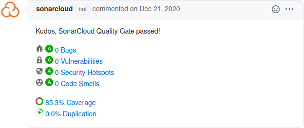
You can learn more about the service on the SonarCloud documentation website.
To access and configure the Hexatomic project in SonarCloud, you must have maintenance access to the Hexatomic repository on GitHub, and log in to SonarCloud at https://sonarcloud.io.
Working with contributions
As documented in the Workflow section, all code and documentation contributions to Hexatomic are made via pull requests from branches or forks, while other types of contributions may not.
Pull requests can come from within the Hexatomic core development team that works on branches in the Hexatomic repository (internal pull requests), or from others that have forked the Hexatomic repository and work on branches in their repository copy (external pull requests).
Maintaining pull requests
The maintainer is in charge of supervising pull requests from their creation to the point when they are merged into the target branched, or dismissed and closed.
It is recommended to turn on notifications for pull requests, e.g. by changing the notification settings with the "Watch" button in the upper right corner of the GitHub interface.
Communication with the creator of the pull request
Communication with the creator of the pull request is by far the most important task in pull request maintenance. Communication should be timely, and in line with the Hexatomic Code of Conduct.
The primary aim of communication in pull requests is to ensure that the contribution is suitable for merging into Hexatomic, and of sufficient quality.
The secondary aim of communication is to provide a welcoming, helpful, appreciative experience for the contributor, that helps to build a community around the software.
Evaluating contributions
The contribution must be evaluated in terms of
- suitability, e.g.:
- Is the contribution going into the right place?
- Does it have the right scope?
- Is it of the right size, or should it be split into different pull requests?
- Does it do what it is meant to do?
- Will it improve Hexatomic?
- quality, e.g.:
- Is the contribution free of security issues, bugs, code smells and style issues?
- Is the contribution well-tested?
- Will the contribution introduce regressions?
- Is the contribution documented?
Evaluation is done through different tools:
- communication to clarify suitability and help fulfill non-functional requirements
- automated testing by the continuous integration workflows that run automated tests on all pull requests
- manual testing and code review to evaluate functional requirements
- static code analysis to evaluate quality
Manual testing of pull requests
In addition to the automated tests run by the continuous integration pipeline, all pull requests must be manually tested. The steps for manual testing depend on whether the pull request is internal or external. The reason for this is that external pull requests should never be afforded the same level of trust as internal pull requests, i.e., pull requests from the core contributors.
Manually testing external, untrusted pull requests
- Code review on GitHub: Perform a code review of every single change on GitHub before doing anything else with the pull request.
This is because external pull requests may contain malign changes, e.g., the continuous integration workflow, or any portion of code, could have been changed to expose secrets such as API or access tokens. - Test a local checkout of the pull request: Check out the pull request locally by cloning its source repository into a new local directory, and pulling and switching to its source branch. You may then use the IDE to review the changes and their interrelations and context more comfortably together with the view on the changes that GitHub provides.
- Build and run the pull request version of Hexatomic locally: Build Hexatomic locally, run it, and test the new functionality manually. Report any issues to the pull request on GitHub as comment in the pull request discussion.
Manually testing internal, trusted pull requests
To avoid potential duplication of code review, you may change the manual testing steps for internal pull requests as follows.
- Review a local checkout of the pull request: Check out the pull request locally by pulling and switching to its source branch. Use the IDE to review the changes and their interrelations and context comfortably, based on the list of changes on GitHub.
- Build and run the pull request version of Hexatomic locally: Build Hexatomic locally, run it, and test the new functionality manually. Report any issues to the pull request on GitHub as comment in the pull request discussion.
Manual regression tests
The update functionality of Hexatomic can't be tested automatically. In addition to manually checking the changes of the pull request, you should therefore also check that
- that there is a status in the lower toolbar ("Hexatomic is up to date") on start up which shows that the update check has been executed, and
- that clicking on the Help menu item, and then Update, triggers another manual update check (the status message in the toolbar should be highlighted by changing its color for a moment).
In case that the pull request is related to the update functionality itself, you should also check the scenario that a new update is available.
- Adjust the file
releng/org.corpus_tools.hexatomic.product/p2.infand the local update site as repository by adding the following lines (but replace<SRC>with the location of your Hexatomic source code directory).
addRepository(type:0,location:file${#58}<SRC>/releng/org.corpus_tools.hexatomic.update/target/repository,name:Local test,enabled:true);\
addRepository(type:1,location:file${#58}<SRC>/releng/org.corpus_tools.hexatomic.update/target/repository,name:Local test,enabled:true);\
- Build the product by executing (from the root of your local source code repository)
mvn -DskipTests package
- Unzip the product file (e.g.
releng/org.corpus_tools.hexatomic.product/target/products/hexatomic-0.9.0-SNAPSHOT-linux.gtk.x86_64.zip) to a temporary directory. The instance of Hexatomic in this temporary directory now functions as the test instance. - In the original local Hexatomic source code repository, change the version number of Hexatomic to a large version number and build the update site by executing. This instance of Hexatomic now functions as the update instance.
mvn tycho-versions:set-version -DnewVersion=1999.0.0
mvn -DskipTests package
- Run Hexatomic from the temporary directory (the test instance) and check that there is a message in the toolbar about an available update.
- Apply the update
- Manually check for an update via the Help > Update menu, and check that the status bar again reports that "Hexatomic is up to date".
- Revert all local changes in the source code repository using Git
Moving pull requests forward
Pull requests should have a maximally short life-span. The maintainer should help moving pull requests forward by completing their tasks in a timely fashion. If a pull request stalls, they should inquire what they can do to help, to move it forward towards merging. If a pull request is orphaned, the maintainer can decide to adopt and complete it themself, or find other contributors to complete it. Alternatively, it should be closed with a comment that explains the reasons for closing.
Merging pull requests
The way that pull requests are merged into their target branch depends on their type.
- Pull requests that provide hotfixes, i.e., repair functionality that is broken rather than provide
new or change existing functionality, must not be merged from the GitHub UI directly. This is
because they target the
mainbranch, which only contains released code. Therefore, code that goes into themainbranch must be formally released, which cannot be done from the GitHub UI. Instead, refer to the section about releasing hotfixes to learn how to do this. - Pull requests that target the
developbranch must not necessarily be released on merge. Instead, code changes from different pull requests can be bundled into a release. Therefore, it is safe to merge the pull request from the GitHub UI by clicking the green Merge pull request button (see figure below).
Requirements for merging
You must only merge pull requests
- that have undergone code review, have been approved by the reviewer, and have no unresolved questions or change suggestions;
- that have passed static code analysis;
- that have passed all CI workflows;
- for which all tasks on the pull request checklist have been completed;
- for which copyright, license and citation information are complete.

Maintaining contributions that are not code contributions
People can contribute to Hexatomic without creating a pull request. Such contributions can be feature requests, bug reports, code reviews, user testing, organizing events, writing or talking about Hexatomic, asking questions, etc. These contributions should be treated on par with pull requests and maintained just as timely and conscientiously. Also, non-code contributions should be attributed and credited.
Licensing and citation
This section describes how licensing and citation information is handled in Hexatomic.
What licenses is Hexatomic licensed under?
The Hexatomic software is licensed under the Apache License, Version 2.0. Read the whole license text to learn more about the license.
The Hexatomic documentation is licensed under a CC0 1.0 Universal (CC0 1.0) license. See the License page for more information.
Automating the fulfillment of license requirements and citation
In order to make it easier to maintain the licenses for Hexatomic and its dependencies, we automate the fulfillment of license requirements.
We also automatically generate the citation metadata for Hexatomic in the Citation File Format (CFF) file CITATION.cff.
You can learn more about CFF one the Citation File Format website.
Source files
Hexatomic includes the Maven License Plugin from MojoHaus in the build. This plug-in handles the license information of the source files included in this repository. You can read about the plug-in on the Maven License Plugin website.
Dependencies
We use the Citation File Format Maven plugin to document Hexatomic's dependencies, their licenses, and their citation information. The plugin is run during the continuous integration release workflow. This plug-in provides two goals, which can be executed to update the third-party dependency information. You have to execute the following Maven commands in the root folder, where the created files and folders will be located, too.
mvn cff:create creates a new CITATION.cff file in the Citation File Format (CFF).
This file does not only include basic information about the authorship of the Hexatomic project but also lists dependencies, for citation purposes.
mvn cff:third-party-folder re-creates the THIRD-PARTY folder.
It includes the license itself and additional license files like NOTICE (used by projects under the Apache License Version 2.0) or about.html (used by Eclipse P2 repositories).
You can configure the behavior of the CFF plug-in by editing the features/org.corpus_tools.hexatomic/pom.xml.
Several templates for curated license information are located in the releng/templates folder.
This includes the releng/templates/CITATION.cff file, which is a template for citation information - e.g., the curated list of authors - for the software itself (here: Hexatomic),
but it can also be used to provide citation metadata for references, which shouldn't be overwritten during auto-generation.
To learn more about configuring the CFF plugin and working with templates, refer to the Citation File Format Maven plugin project.
Releases
Releases are versions of Hexatomic that are marked as encapsulating a specific set of tested and documented functionality features or repairs. Releases have a version identifier and are listed on the releases page in the Hexatomic repository.
When to create a release
Hexatomic is a dynamic software project, and therefore there is no release plan with fixed dates for releases. Instead, the maintainers of Hexatomic decide when to create a new release. There are, however, two ground rules for when a release is created:
- Whenever a bug in a previous release of Hexatomic is hotfixed, a new hotfix release must be created.
- Whenever new functionality has been implemented and merged into the
developbranch, a new feature release should be created.
Before you make a release, make sure that you have configured commit signature verification with GPG, or else the release workflow will fail.
Feature releases
To release a new feature (i.e., minor) version of Hexatomic, run the following commands in the repository root directory.
git checkout develop- Checks out the develop branch (feature releases are always based ondevelop).git pull origin develop- Updates the local develop branch.mvn clean install- Builds the project, runs tests, and may update the file headers in Java files.git add .- Adds the updated files - if any - to the Git index. Make sure you only add intended changes.git commit -m "Update file headers"- Commits the updates to version control.git push- Updates the remote develop branch.mvn gitflow:release-start- Starts the release process.- The Maven GitFlow plugin will then prompt you to enter a version number for the release. Make sure you enter a version identifier according to semantic versioning, in the format
MAJOR.MINOR.PATCH. Do not use a-SNAPSHOTsuffix! - Check if the
[Unreleased]changelog section inCHANGELOG.mdis complete and up-to-date. Make changes, commit and push if necessary. mvn keepachangelog:release -N- Updates the changelog in the release branch.git add CHANGELOG.md- Adds the updated changelog to the Git index.git commit -m "Update changelog"- Commits the updated changelog to version control.git push- Updates the remote release branch.mvn gitflow:release-finish- Finalizes the release process.
Hotfix releases
Hotfixes come into the project via pull requests of a hotfix branch against main.
Important: Do not merge pull requests from hotfix branches into main!
Instead, checkout the hotfix branch locally, and start the merge and release process with the Maven GitFlow plugin:
git checkout hotfix/{hotfix version}- Checks out the respective hotfix branch.git pull origin hotfix/{hotfix version}- Checks for any remote changes to the branch.mvn clean install- Builds the project, runs tests, and may update the file headers in Java files.git add .- Adds the updated files - if any - to the Git index. Make sure you only add intended changes.git commit -m "Update file headers"- Commits the updates to version control.git push- Updates the remote hotfix branch.- Check if the
[Unreleased]changelog section inCHANGELOG.mdis complete and up-to-date. Make changes, commit and push if necessary. mvn keepachangelog:release -N- Updates the changelog in the release branch.git add CHANGELOG.md- Adds the updated changelog to the Git index.git commit -m "Update changelog"- Commits the updated changelog to version control.git push- Updates the remote release branch.mvn gitflow:hotfix-finish- Finalizes the hotfix and finishes the merge and release procedure.
Promoting releases on GitHub
When you have made a feature or hotfix as described above, you will find a new tag for the released version on the Hexatomic releases page on GitHub.
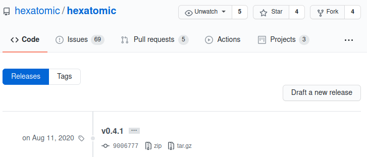
You can now make a release from this tag:
- Click on Draft a new release on the Releases page.
- Complete the Tag version field with the tag you want to release (e.g.
v0.4.1). - Give the release a title. It should start with
Hexatomic, include any necessary qualifiers (e.g.,Betaif it's a0.MAJOR version) and the version number itself without any prefixes (e.g., use0.4.1instead ofv0.4.1). - Describe the release in three parts:
- A high-level description of the form
This is a Hexatomic <hotfix/feature> release <:bug:/:tada:>!followed by a blank line. - A short description of the fix (including issue numbers with hash prefixes, e.g.
#123) or the added functionality. You can use bullet lists if more than one fix or feature has been added. - A link to the user documentation with, e.g., the following text:
:green_book: Read the [user documentation](https://hexatomic.github.io/hexatomic/user/v0.5/index.html) for Hexatomic to learn how to install and use it.Make sure you get thevMAJOR.MINORpart in the documentation URL right.
- A high-level description of the form
- Click the Preview tab and check if everything looks good.
- Click on the green Publish release button. You can always delete and re-create releases from tags if something goes wrong.
- Check if the release contains all "binaries", i.e., the product .zip files for all three major operating systems.
- An GitHub action should also automatically update the P2 repository. Run the old version of Hexatomic and check an update is found.

Promoting releases to the community
Hexatomic has a mailing list for users: hexatomic-users@lists.hu-berlin.de.
The maintainers of the Hexatomic software project are also maintainers of this mailing list.
Whenever a new version of Hexatomic is released, the mailing list should be notified of this.
To do so, write an email to hexatomic-users@lists.hu-berlin.de using the following template.
Replace the <PLACEHOLDERS> with the actual values.
Subject: Hexatomic <VERSION NUMBER OF THE NEW VERSION> is released!
Body:
Dear list,We have released a new version of Hexatomic (<FULL VERSION NAME OF THE NEW VERSION, e.g., 0.6.0 Beta>). You can download it here: https://github.com/hexatomic/hexatomic/releases/tag/<TAG FOR THE NEW VERSION>.
<BRIEF SUMMARY OF THE CHANGELOG, MENTION THE MOST IMPORTANT CHANGES>
If you have questions or feature requests, please open an issue on the Hexatomic GitHub repository: https://github.com/hexatomic/hexatomic/issues/new/choose.
Many thanks!
<NAME OF THE MAINTAINER>
What to do when releases go wrong?
When a feature release doesn't work as expected, simply
- Checkout the
developbranch (git checkout develop). - Delete the release branch for the version you wanted to release (
git branch -d release/{version}). - Delete the same branch on GitHub (via the web interface).
- Restart the release process from the top.
When a hotfix release doesn't work as expected, simply
- Make the necessary changes in the hotfix branch, then continue with the merge and release process.
Periodic unreviewed code triage
Hotfixes can be merged without code review if there is only one maintainer available. To still be able to perform some kind of review, periodic triages of yet unreviewed code are performed by one of the maintainers.
These triages must be done at the beginning of each quarter of the calendar year.
The time of the last triage and any findings are logged in the file UNREVIEWED_CODE_TRIAGE.md in the main repository.
Determining changes since the last triage
Open the list of all pull requests (PRs) in GitHub, filter them by the unreviewed label, and sort them to show the oldest ones first.
If there are no pull requests with such a label, the triage is finished and you can proceed to the "Documenting the results" section.
Next, open the file UNREVIEWED_CODE_TRIAGE.md and check which commit of the main branch was last triaged.
Create a new branch from this commit.
This branch must never be merged into another branch.
For each of the pull requests with the unreviewed label, merge the tip commit of the pull request into your branch.
At this stage, conflicts may appear, which may, for example, be due to the addition of reviewed PRs with larger features in between non-reviewed hotfix PRs.
If there is any conflict, abort the merge, review the current changes up to this point, and start a new triage with the last commit before the merge commit of the problematic PR as a starting point.
For example, in the following history of pull requests, there would be two triages: one triage for PRs 1 and 2, starting from the last triaged main commit, and one triage from the PR X commit (which was reviewed) that includes PRs 4 and 5.
last triaged commit
|
v
+ <-- PR 1 (not reviewed)
|
v
+ <-- PR 2 (not reviewed)
|
v
+ <-- PR X (reviewed)
|
v
conflict! <-- PR 4 (not reviewed)
|
v <-- PR 5 (not reviewed)
When you have merged all the pull requests included in this triage, compare the changes of the branch with the previously triaged commit and review the code changes.
To compare the changes, you can use the git command line (git diff <last-triaged-commit> HEAD), a graphical git diff tool, or the GitHub "compare branches" feature.
For each problem you find, create a new issue in the GitHub issue tracker and add it to the UNREVIEWED_CODE_TRIAGE.md file.
At the end of the triage and after all issues have been documented, remove the unreviewed label from the triaged pull requests.
Documenting the results
Each triage should have its own section in the UNREVIEWED_CODE_TRIAGE.md file.
New triage results are added to the top of the file.
Use the date on which the triage has been completed as the header of the triage section.
If a conflict occurred during the merge of the PRs, and you have had to split the set of PRs that you need to triage as explained above, also add "Set" and the consecutive number of the set in the order of processing, e.g., # 2020-08-27 (Set 1), # 2020-08-27 (Set 2), etc.
Below the heading, record
- a link to the GitHub user page of the person who did the triage,
- the revision hash range on the
mainbranch of the first and last commit you have triaged in the triaged set (or the whole triage if you didn't have to split it), - a list of PRs that where included in the triage. Then, add a list entry for each issue you found, with the issue title and number URL, for example:
- Resolve settings for running from within Eclipse in docs #197
- TestGraphEditor.testShowSaltExample times out #202
Examples for triage results
First part of a triage which was split due to conflicts.
## 2020-08-07 (Set 1)
Triage done by [thomaskrause](github.com/thomaskrause).
Revison range: 758884326b3e3a6b29f54418158e4cc0204be525..874720de8fd6d5b415edad9a66412719abf49279
PRs: #199, #127, #138
### Issues
- Resolve settings for running from within Eclipse in docs #197
- TestGraphEditor.testShowSaltExample times out #202
Example file section for a triage where no unreviewed pull requests have been found. You can omit the start revision hash in this case.
## 2020-04-01
Triage done by [thomaskrause](github.com/thomaskrause).
PRs: none
Revision range: ..fbc424bc0918e16fc78d07307c4cca47bc1620f1
Repository maintenance
The Hexatomic source code is hosted on GitHub at https://github.com/hexatomic/hexatomic (the repository). This section documents the maintenance of the repository.
You can configure the way people can interact with the GitHub repository in a number of ways, including template files, metadata documents, community documentation, and others.
Template files
Template files can be used to customize the GitHub repository to some extent. The Hexatomic repository uses two different template types:
- Issue templates
- A pull request template
These templates are text files in the .github/ directory that are formatted with Markdown, and may have a YAML front matter.
You can learn more about issue templates and pull request templates from the GitHub documentation.
The templates contain the predefined contents of the initial issue comment, or the initial pull request comment. They may contain checklists, text sections, bullet lists, etc., that work as "form elements" the user is asked to complete.
Further instructions for users are included as <!-- HTML comments -->.
Issue templates
You can find the issue templates in .github/ISSUE_TEMPLATE/.
GitHub will use the contents of this directory to determine the way that new issues are created.
The Hexatomic repository has two issue templates, one for bug reports (.github/ISSUE_TEMPLATE/bug_report.md), and one for feature requests (.github/ISSUE_TEMPLATE/feature_request.md).
Therefore, when you create a new issue, you are being asked which type of issue you want to create: a bug report, or a feature request.
The names and descriptions of the options come from the YAML front matter of the different issue template files.

On a side note, if there is only one template per template type (issue/pull request), no name and description is needed, and the single file will automatically be used.
Once you choose between issue types, a new issue will be created for you to edit. The editor will be pre-populated with the contents of the respective Markdown file. Additionally, the front matter of the respective Markdown file determines some other values for the newly created issue, for example
- the name of the template (shown in the issue choice dialogue);
- the description of the template (shown in the issue choice dialogue)
- the title of the newly created issue
- A list of labels that will be assigned to the newly created issue
- A list of assignees that the newly created issue will be assigned to.
Below is an example for the front matter of the bug report template. The triple hyphens define a section of front matter in YAML.
---
name: Bug report
about: Create a report to help us improve Hexatomic.
title: ''
labels: 'bug'
assignees: ''
---
This front matter, together with the Markdown body text of the template creates a pre-populated new issue as in the following figure.
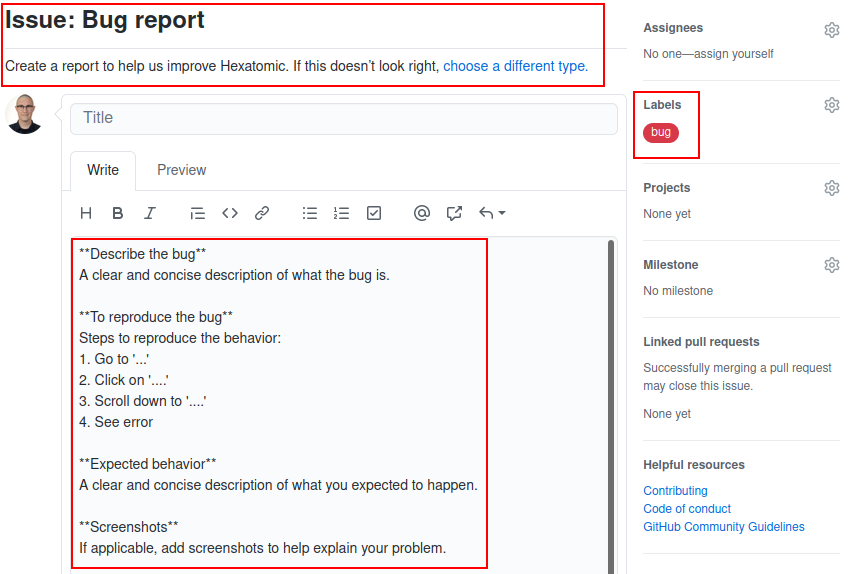
Pull request template
The pull request template works similarly to the issue templates. Its main feature is a checklist for the user to complete before the pull request can be reviewed. The completion progress of the checklist is also reported on the repository page listing all pull requests.

Prepare for the end of maintenance period
Due to the prevalence of fixed-term contracts, research software projects are under constant threat to lose funding and thus be brought to a premature end-of-life. To react to this eventuality, it is necessary to prepare Hexatomic for its end-of-maintenance. This is part of a setup of the software project, that makes it possible to revive the project even after longer periods of dormancy or abandonment.
If you know that your maintenance term is coming to an end, please take the following precautions to prepare Hexatomic for a later revival. For each step, an approximate start time is suggested.
1. Freeze development
Start of the last quarter of your maintenance term
Do not start to draft, plan, or develop new functionality features. Instead, use available resources to prepare for end-of-maintenance.
Communicate the upcoming end-of-maintenance to current contributors during as soon as possible. If you are lucky, one of them may want to integrate a feature so badly that they take on maintenance themself, or are able to round up more funding.
2. Prioritize and clear open issues and pull requests
Start of the last quarter of your maintenance term
Prioritize open issues and pull requests by necessity to be merged before end-of-maintenance. If you use a code platform such as GitHub or GitLab, use its project management features (boards, milestones, etc.) to track progress, and react to delays by communicating with the stakeholders in issues and pull requests. De-prioritize as necessary.
For any new incoming issue or pull request, communicate to their authors that development is frozen due to the upcoming end of your maintenance term. Perhaps there is a new maintainer among them, or a new funding idea to be had.
Focus on clearing those issues and PRs with the highest priority. Make sure that you maintain the high standards for accepting contributions to Hexatomic.
You can work on clearing issues and PRs up until one month before the end of your maintenance term.
3. Issue an end-of-maintenance announcement to the whole community
Start of the last quarter of your maintenance term
Publicize the end-of-maintenance date loud and clear wherever it makes sense, e.g., the project homepage and the README.md file.
Make sure to use any communication channels to the community you have: issues, mailing lists, conferences, etc.
Don't forget to provide a way to contact you, as someone from the community may want to volunteer as maintainer, or may have funding available.
4. Batten down the hatches
1 month before the end of your maintenance term
Take a round trip across the project. Read the documentation carefully again to make sure that it contains everything that may be needed for a revival later on. Fix last small things that catch your attention.
5. Release and archive
1 week before the end of your maintenance term
Make sure that everything that is release-ready has been released. Make one last release if necessary, and publish it. Archive the whole repository on Software Heritage; read the Software Heritage documentation to learn how.
6. Say goodbye
1 day before the end of your maintenance term
Add a note at the top of the README.md, notifying future repository visitors that Hexatomic has reached a temporary end-of-maintenance.
Include contact details for yourself in that note that don't rely on GitHub functionality (e.g., an email address), so that potential new maintainers can get in touch with you if they want to revive the repository.
Let them know that it can, however, be revived, and link to the relevant developer and maintainer documentation on Software Heritage (e.g., https://archive.softwareheritage.org/browse/origin/content/?origin_url=https://github.com/hexatomic/hexatomic&path=docs/dev/src/SUMMARY.md).
Archive the repository on GitHub.
This will preserve everything that's in the repository, including issues and pull requests, but everything will be read-only.
Take your leave, and don't forget to switch off the lights.
Thank you for maintaining Hexatomic!
Common issues
This is a collection of common issues you may encounter during Hexatomic development. If you encounter errors during the build or in the Eclipse IDE that aren't straightforward to solve, it may be worth having a look at this section.
Target platform
Hexatomic uses a so-called target platform to define product and development dependencies. You can read about it in Creating and activating the target platform.
🚧 .target may be out of sync with .tpd
Sometimes, contributors may update the .tpd source file, but forget to push a newly generated .target file to the repository.
This may lead to Eclipse being unable to resolve types, or other errors.
💡 Generate the target file from the .tpd file as described in Creating and activating the target platform, and contribute the newly generated .target file back to the project.
🚧 Target Platform may not be resolved
Whenever a Target Platform definition file has been changed, you have to activate it in Eclipse, so that dependencies can be resolved.
If you don't do this, Eclipse may show error messages which seemingly relate to something else, e.g.,
The method method() of type SomeType must override or implement a supertype method, or errors on imports.
💡 Set the new definition as active target platform as described in Creating and activating the target platform.
Governance
The decision-making processes for the Hexatomic project are described in the contributing guidelines in the main Hexatomic repository.
License
With the exception of the content listed below, this documentation is licensed under a CC0 1.0 Universal (CC0 1.0) license.
Content excepted from the CC0 1.0 Universal license
- Git branching model graphic in section Workflow by Vincent Driessen from the original blog post "A successful Git branching model" is licensed under a CC BY-SA license.
CC0 1.0 Universal legal code
Creative Commons Legal Code
CC0 1.0 Universal
CREATIVE COMMONS CORPORATION IS NOT A LAW FIRM AND DOES NOT PROVIDE
LEGAL SERVICES. DISTRIBUTION OF THIS DOCUMENT DOES NOT CREATE AN
ATTORNEY-CLIENT RELATIONSHIP. CREATIVE COMMONS PROVIDES THIS
INFORMATION ON AN "AS-IS" BASIS. CREATIVE COMMONS MAKES NO WARRANTIES
REGARDING THE USE OF THIS DOCUMENT OR THE INFORMATION OR WORKS
PROVIDED HEREUNDER, AND DISCLAIMS LIABILITY FOR DAMAGES RESULTING FROM
THE USE OF THIS DOCUMENT OR THE INFORMATION OR WORKS PROVIDED
HEREUNDER.
Statement of Purpose
The laws of most jurisdictions throughout the world automatically confer
exclusive Copyright and Related Rights (defined below) upon the creator
and subsequent owner(s) (each and all, an "owner") of an original work of
authorship and/or a database (each, a "Work").
Certain owners wish to permanently relinquish those rights to a Work for
the purpose of contributing to a commons of creative, cultural and
scientific works ("Commons") that the public can reliably and without fear
of later claims of infringement build upon, modify, incorporate in other
works, reuse and redistribute as freely as possible in any form whatsoever
and for any purposes, including without limitation commercial purposes.
These owners may contribute to the Commons to promote the ideal of a free
culture and the further production of creative, cultural and scientific
works, or to gain reputation or greater distribution for their Work in
part through the use and efforts of others.
For these and/or other purposes and motivations, and without any
expectation of additional consideration or compensation, the person
associating CC0 with a Work (the "Affirmer"), to the extent that he or she
is an owner of Copyright and Related Rights in the Work, voluntarily
elects to apply CC0 to the Work and publicly distribute the Work under its
terms, with knowledge of his or her Copyright and Related Rights in the
Work and the meaning and intended legal effect of CC0 on those rights.
1. Copyright and Related Rights. A Work made available under CC0 may be
protected by copyright and related or neighboring rights ("Copyright and
Related Rights"). Copyright and Related Rights include, but are not
limited to, the following:
i. the right to reproduce, adapt, distribute, perform, display,
communicate, and translate a Work;
ii. moral rights retained by the original author(s) and/or performer(s);
iii. publicity and privacy rights pertaining to a person's image or
likeness depicted in a Work;
iv. rights protecting against unfair competition in regards to a Work,
subject to the limitations in paragraph 4(a), below;
v. rights protecting the extraction, dissemination, use and reuse of data
in a Work;
vi. database rights (such as those arising under Directive 96/9/EC of the
European Parliament and of the Council of 11 March 1996 on the legal
protection of databases, and under any national implementation
thereof, including any amended or successor version of such
directive); and
vii. other similar, equivalent or corresponding rights throughout the
world based on applicable law or treaty, and any national
implementations thereof.
2. Waiver. To the greatest extent permitted by, but not in contravention
of, applicable law, Affirmer hereby overtly, fully, permanently,
irrevocably and unconditionally waives, abandons, and surrenders all of
Affirmer's Copyright and Related Rights and associated claims and causes
of action, whether now known or unknown (including existing as well as
future claims and causes of action), in the Work (i) in all territories
worldwide, (ii) for the maximum duration provided by applicable law or
treaty (including future time extensions), (iii) in any current or future
medium and for any number of copies, and (iv) for any purpose whatsoever,
including without limitation commercial, advertising or promotional
purposes (the "Waiver"). Affirmer makes the Waiver for the benefit of each
member of the public at large and to the detriment of Affirmer's heirs and
successors, fully intending that such Waiver shall not be subject to
revocation, rescission, cancellation, termination, or any other legal or
equitable action to disrupt the quiet enjoyment of the Work by the public
as contemplated by Affirmer's express Statement of Purpose.
3. Public License Fallback. Should any part of the Waiver for any reason
be judged legally invalid or ineffective under applicable law, then the
Waiver shall be preserved to the maximum extent permitted taking into
account Affirmer's express Statement of Purpose. In addition, to the
extent the Waiver is so judged Affirmer hereby grants to each affected
person a royalty-free, non transferable, non sublicensable, non exclusive,
irrevocable and unconditional license to exercise Affirmer's Copyright and
Related Rights in the Work (i) in all territories worldwide, (ii) for the
maximum duration provided by applicable law or treaty (including future
time extensions), (iii) in any current or future medium and for any number
of copies, and (iv) for any purpose whatsoever, including without
limitation commercial, advertising or promotional purposes (the
"License"). The License shall be deemed effective as of the date CC0 was
applied by Affirmer to the Work. Should any part of the License for any
reason be judged legally invalid or ineffective under applicable law, such
partial invalidity or ineffectiveness shall not invalidate the remainder
of the License, and in such case Affirmer hereby affirms that he or she
will not (i) exercise any of his or her remaining Copyright and Related
Rights in the Work or (ii) assert any associated claims and causes of
action with respect to the Work, in either case contrary to Affirmer's
express Statement of Purpose.
4. Limitations and Disclaimers.
a. No trademark or patent rights held by Affirmer are waived, abandoned,
surrendered, licensed or otherwise affected by this document.
b. Affirmer offers the Work as-is and makes no representations or
warranties of any kind concerning the Work, express, implied,
statutory or otherwise, including without limitation warranties of
title, merchantability, fitness for a particular purpose, non
infringement, or the absence of latent or other defects, accuracy, or
the present or absence of errors, whether or not discoverable, all to
the greatest extent permissible under applicable law.
c. Affirmer disclaims responsibility for clearing rights of other persons
that may apply to the Work or any use thereof, including without
limitation any person's Copyright and Related Rights in the Work.
Further, Affirmer disclaims responsibility for obtaining any necessary
consents, permissions or other rights required for any use of the
Work.
d. Affirmer understands and acknowledges that Creative Commons is not a
party to this document and has no duty or obligation with respect to
this CC0 or use of the Work.